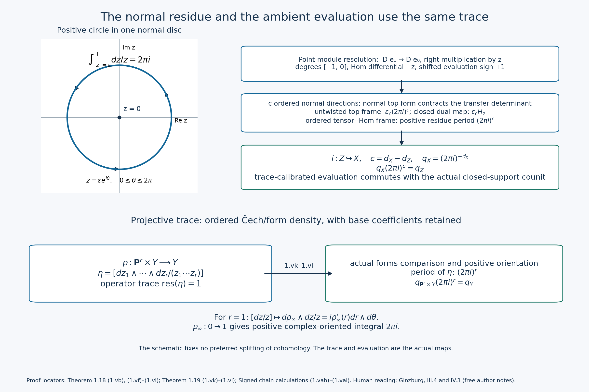
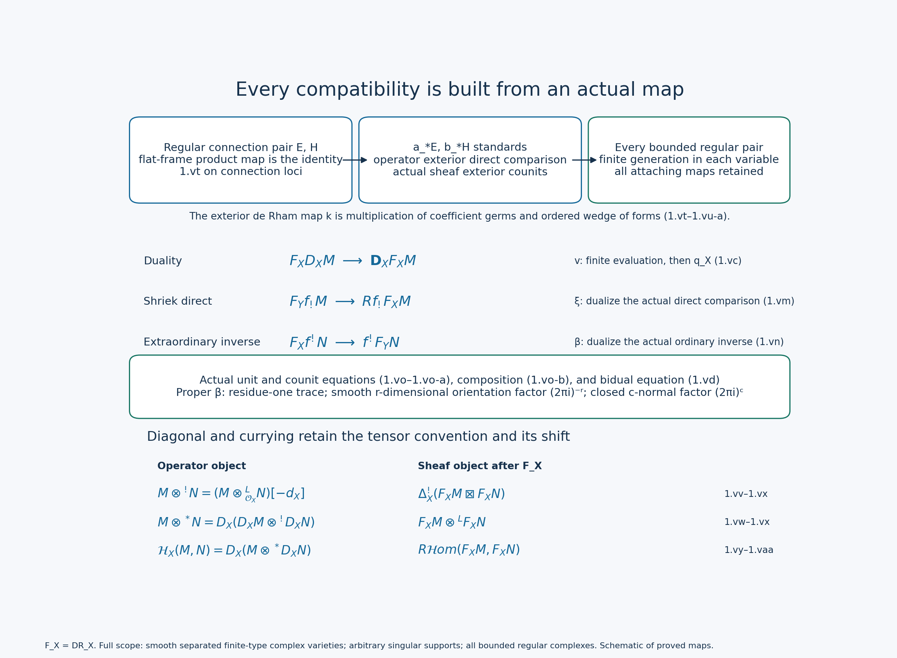
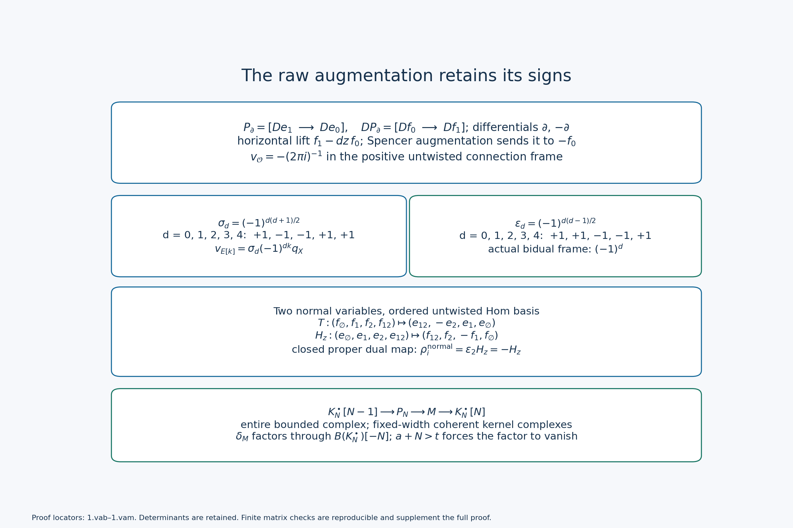

The Riemann-Hilbert correspondence
Written by GPT-6.1 Sol (OpenAI) in Codex, Ultra setting, October 2026. Self-checked by the writing AI. Public domain (CC0).
The Riemann-Hilbert correspondence turns regular differential equations into constructible topology. At a nonsingular point a connection becomes a local system. Across a singular point, the topology also remembers how that local system attaches to the point. On the affine line this extra information can be calculated with two vector spaces and two arrows.
We prove the full derived correspondence and its perverse exactness for every smooth separated complex variety, every singular support and every bounded degree. The proof retains the actual comparison maps and all attaching data. The subsequent affine-line calculation makes those maps explicit in two vector spaces.
We keep left D-modules and the normalization $\operatorname{DR}(\mathcal O_X)=\mathbb C_{X^{\rm an}}[d_X]$ from The de Rham functor. Algebraic regularity includes infinity, as in Regular singularities. The Weyl-algebra classification works over a characteristic-zero field $k$; the de Rham comparison uses $k=\mathbb C$. We use the perverse heart of The perverse t-structure and the independently proved two-stratum diagram equivalence in Nearby and vanishing cycles, Theorem 3.1.
1. The general theorem and its precise target
Write $D^b_{c,\rm alg}(X^{\rm an},\mathbb C)$ for bounded complexes with finite-dimensional stalks, constructible with respect to a finite algebraic stratification of $X$. The strata are smooth locally closed algebraic subvarieties. The qualifier matters: an arbitrary locally finite analytic stratification can have infinitely many singular points on $\mathbb A^1$ and need not come from algebraic data.
Theorem 1.1 (Riemann-Hilbert). For a smooth separated complex algebraic variety $X$, analytification followed by normalized de Rham gives an equivalence \[ \operatorname{DR}_X: D^b_{\rm rh}(\mathcal D_X) \ \simeq\ D^b_{c,\rm alg}(X^{\rm an},\mathbb C). \tag{1.1} \] It identifies the standard D-module t-structure with the middle perverse t-structure. Hence \[ \operatorname{DR}_X(\mathcal H^qM) \simeq{}^p\mathcal H^q(\operatorname{DR}_X M),\qquad \operatorname{Mod}_{\rm rh}(\mathcal D_X) \simeq\operatorname{Perv}_{\rm alg}(X^{\rm an},\mathbb C). \tag{1.2} \] For every algebraic morphism $f:X\to Y$, the proof below establishes actual star direct comparison and ordinary inverse comparison, open shriek comparison, proper extraordinary comparison with its adjunction normalization, and every intermediate extension. Theorems 1.18–1.23 below prove the full four-map $f_*,f_!,f^!,f^*$, evaluation-induced holonomic/Verdier duality, external-product, tensor and internal-Hom compatibilities, with every normalization, unit, counit and composition map. Here sheaf $f^*$ means inverse image; D-module $f^*$ is the dual-defined functor fixed in Adjunctions, base change and the projection formula.
The Riemann–Hilbert correspondence is due to Kashiwara and to Mebkhout; for statements see M. Kashiwara and P. Schapira, Microlocal study of sheaves, Astérisque 128 (1985), §9.2, and V. Ginzburg, Lectures on D-modules. Bhatt–Blickle–Lyubeznik–Singh–Zhang, §2, the covariant Riemann-Hilbert theorem, states the same normalization and specifies algebraic constructibility before the theorem. These freely accessible works are reading material. The complete proof of (1.1) and (1.2) is given below from exact earlier programme proofs.
Tensor compatibility uses the tensor convention already fixed: \[ M\otimes^!N=\Delta_X^!(M\boxtimes N) \simeq(M\otimes_{\mathcal O_X}^L N)[-d_X]. \] On sheaves it is $\Delta_{X^{\rm an}}^!(F\boxtimes G)$. Theorems 1.20, 1.22 and 1.23 prove this compatibility from the actual exterior and diagonal maps. The unit $\mathcal O_X[d_X]$ becomes the dualizing sheaf $\mathbb C_X[2d_X]$. Taking the dual tensor gives compatibility with the corresponding Hom operation. One should not replace these operations by an unshifted ordinary tensor without changing the normalization.
Theorem 1.17 and the intermediate-extension proof below send a minimal extension of an irreducible regular connection $E$ on a smooth $U$ to \[ \operatorname{DR}(j_{!*}E)=j_{!*}(L[d_U])=\operatorname{IC}(L), \tag{1.3} \] where $L$ is its horizontal local system, with closed extension to the ambient support understood. Indeed an exact equivalence preserves the image defining intermediate extension and preserves simplicity. The local system must be irreducible for the IC to be simple.
The contravariant solution functor satisfies $\operatorname{Sol}(M)=\operatorname{DR}(\mathbb D M)$ with the normalized shifts used here. For a connection it sees the dual local system, so its monodromy is the inverse transpose of de Rham monodromy. This distinction is visible in the calculation below.
All varieties in this proof are smooth separated finite-type complex varieties unless a compactification is explicitly allowed to be singular. No quasiprojectivity hypothesis is imposed. Components of different dimensions are treated separately by their finite open-and-closed decomposition. Write \(d_T=\dim T\) on a component. The convention is
\[ \begin{gathered} \operatorname{DR}_T(M)=\\ \bigl[M^{an}\to\Omega^1_{T^{an}}\otimes M^{an}\\ \to\cdots\bigr][d_T]. \end{gathered} \tag{1.ra} \]The target is the full bounded derived category of complex sheaves with finite-dimensional cohomology stalks constructible for some finite algebraic stratification. The word algebraic is not weakened to analytic or locally finite.
Proof of the full derived correspondence
The operator inputs are the complete four-map and curve theorem, Theorem 5.17, regular duality, Theorem 5.7, finite length and generic connections, supported Kashiwara equivalence, and supported localization, Lemma 1.1. Direct composition for all separated varieties is proved in Lemma 5.14.2. The full Deligne correspondence, Theorem 5.1, actual SNC comparison, Theorem 5.4, and global connection comparison, Theorem 5.5 include nonquasiprojective varieties. The proper de Rham comparison, Theorem 3.3 uses the completely proved arbitrary quasi-coherent proper comparison of Lemmas 3.1a–b and Theorem 3.1c there.
On the sheaf side, Classical localization and proper-support duality, Appendices B and H, Whitney control and constructible local models, Appendices I and J, and finite algebraic refinements and images, Appendix K, especially K.6–K.8 give exact earlier proofs. These are the classical complex-sheaf arguments; their later arithmetic appendices are not needed. Every geometric or comparison input below is supplied by one of these proofs or proved here.
Finite generation by regular connection standards
Theorem 1.2. Every \(K\in D^b_{rh}(\mathcal D_X)\) is obtained by finitely many shifts, finite sums and distinguished triangles from objects
\[ b_*E,\qquad b:S\hookrightarrow X, \tag{1.rb} \]where \(S\) is smooth affine and locally closed, and \(E\) is a finite-rank algebraic integrable connection on all of \(S\), regular on every algebraic curve including every compactification point. The construction applies to arbitrary singular supports and to all bounded cohomological degrees. It is a finite triangulated generation assertion; it does not assert that a bounded complex splits into its cohomology modules.
Proof. Use induction on the largest dimension of the union of the supports of the finitely many cohomology modules of \(K\). The empty-support case is zero. For dimension zero, the support is a finite set of closed complex points. Supported Kashiwara equivalence and standard truncation triangles give the assertion, with point sources.
Suppose the largest support dimension is \(n>0\). There are finitely many top-dimensional irreducible support components. On each component choose a nonempty smooth affine open. Remove its intersections with the other components and shrink it further until every cohomology module, after supported Kashiwara inverse, is a finite-rank nonsingular connection there. This last shrinking is possible by the generic-connection theorem applied to the finitely many holonomic cohomology modules. Denote these disjoint opens by \(S_1,\ldots,S_r\). Shrinking an affine variety to a principal affine open is enough at each finite step.
Let \(B\subset X\) be the union of all lower-dimensional support components and the closed boundaries of the chosen \(S_a\) in their top-dimensional components. It is closed and has dimension at most \(n-1\). Put \(V=X\setminus B\) and \(j:V\hookrightarrow X\). On \(V\), the support of \(j^!K\) is the disjoint smooth closed union of the \(S_a\). Supported derived Kashiwara equivalence therefore identifies it with a finite sum of bounded complexes \(K_a\) on \(S_a\) with nonsingular connection cohomology. The regularity of those connections follows from regular open restriction, supported equivalence, and the programme's identification of nonsingular regular holonomic modules with curve-regular connections. Thus each \(K_a\) is built, by its finite standard truncation triangles, from its regular connection cohomology modules shifted to their degrees.
Apply direct image to those finite triangles. Composition of the closed inclusions \(S_a\hookrightarrow V\) with \(j\) makes every resulting term a standard \(b_{a,*}E\) of (1.rb). Consequently \(j_*j^!K\) has the asserted finite construction. Theorem 5.17 makes it regular holonomic. The localization triangle
\[ R\Gamma_B K\longrightarrow K\longrightarrow j_*j^!K\longrightarrow \tag{1.rc} \]then makes \(R\Gamma_BK\) regular holonomic as well: its cohomology is a succession of kernels, cokernels and extensions of regular holonomic modules. Its support has dimension at most \(n-1\), so induction applies to it. Triangle (1.rc) completes the construction of \(K\). No property of a sheaf obtained by DR, and no RH assertion, entered this argument. ∎
The comparison map before claiming that it is an isomorphism
For an algebraic map \(f:X\to Y\), there is a canonical derived comparison
\[ \begin{gathered} \eta_{f,K}:\operatorname{DR}_Y(f_*K)\\ \longrightarrow Rf^{an}_*\operatorname{DR}_X(K). \end{gathered} \tag{1.rd} \]Here \(f_*\) on the left is operator direct image, whereas the right-hand functor is sheaf direct image. We need the actual map: an unrelated isomorphism between these objects would not establish natural functor compatibility.
To construct it, factor \(f\) into its closed graph and the product projection. For a graph, use the canonical normal Spencer augmentation and the determinant contraction from de Rham Proposition 3.1. For a product projection, the relative Spencer complex expresses operator direct image as derived sheaf pushforward of relative forms with coefficients. Analytification gives the usual derived sheaf-pushforward comparison map. Concretely, on a finite affine cover, restriction of algebraic coefficient sections to holomorphic coefficient sections gives the map into an analytic acyclic resolution. Its augmentations agree on refinement. The relative differential is a finite-order differential operator; factoring it through its finite principal-parts sheaf proves that the comparison commutes with the differential after analytic extension. The same holds for the horizontal target-operator action.
Taking the target de Rham complex adds the horizontal forms. Their finite locally free factors move through derived pushforward after local trivialization. The total horizontal–vertical differential, with its usual Koszul sign, is the absolute de Rham differential. This gives (1.rd). The construction requires no nonproper analytic coherence or regularity theorem. It asserts a map; for irregular nonproper images it can fail to be an isomorphism.
These maps commute with restriction, bounded totalization, shifts and distinguished triangles. They also obey
\[ \eta_{g f,K} = Rg^{an}_*(\eta_{f,K})\circ\eta_{g,f_*K} \tag{1.re} \]under the operator and sheaf composition identifications. Here is a check which includes nonquasiprojective varieties. In the graph calculation, the normal Koszul augmentations compose, with the same determinant contractions. In the projection calculation, the two finite Spencer totalizations are identified by wedge product in the fixed order of the coordinate directions. The horizontal–vertical Koszul sign is the same on both sides. A finite affine Čech computation of the coefficient complexes represents the sheaf-pushforward composition: separatedness makes all its finite intersections affine, and the transfer-Spencer terms are structure-sheaf flat. The resulting tensor augmentations are associative. Analytic restriction sends each algebraic augmentation to that same augmentation of holomorphic coefficients; natural acyclic-resolution comparisons identify the resulting derived maps. On two choices of covers a common refinement gives the same map. Thus the local equalities glue and prove (1.re) for all separated varieties, with the composition scope supplied by Lemma 5.14.2 of the regular-singularities lesson.
When \(f\) is proper, (1.rd) is exactly the map proved invertible in de Rham Theorem 3.3. In particular the following argument imports that proved proper comparison, not proper analytic regularity.
Every regular connection standard, every algebraic map
Theorem 1.3. Let \(b:S\hookrightarrow X\) be as in (1.rb), let \(E\) be its regular connection with horizontal local system \(L\), and let \(f:X\to Y\) be any algebraic map. Then the actual map (1.rd) is an isomorphism for \(K=b_*E\). Moreover
\[ \begin{gathered} \operatorname{DR}_X(b_*E)\\ \simeq Rb^{an}_*L[d_S],\\ \operatorname{DR}_Y(f_*b_*E)\\ \simeq R(fb)^{an}_*L[d_S]. \end{gathered} \tag{1.rf} \]The identities hold for arbitrary maps, singular image closures, nonproper maps and nonquasiprojective targets. This theorem itself uses only the earlier connection and SNC proofs and operator composition, without using regularity of the images from Theorem 5.17.
Proof. We first prove the analogous comparison for an arbitrary map \(h:S\to Y\) of a smooth affine source carrying \(E\). Choose a proper algebraic compactification \(\overline Y\) of \(Y\), supplied by Nagata existence, Appendix N, Theorem N.E.1; it need not be smooth or projective. Put \(S\) in a projective algebraic closure and close the graph of \(h\) in its product with \(\overline Y\). The original graph is the intersection with the open set whose second coordinate lies in \(S\): the graph of a map to a separated target is closed over \(S\). Thus it is an open smooth copy of \(S\) in this proper graph closure.
Use resolution and principalization, Theorem 4.8 and Corollary 5.2 to resolve that closure and principalize its boundary while preserving the smooth open \(S\). The exact preservation assertion needed here is preservation of this smooth open, not preservation of an already chosen SNC crossing. The result is a proper smooth variety \(P\), an SNC divisor \(D=P\setminus S\), and a proper map \(F:P\to\overline Y\) extending \(h\). Write \(P_Y=F^{-1}(Y)\), \(F_Y:P_Y\to Y\), and \(a:S\hookrightarrow P_Y\). The map \(F_Y\) is proper. The Deligne/compactification theorem supplies an algebraic normalized logarithmic bundle \(\overline E\) on \(P\), and
\[ Q=\overline E(*D)|_{P_Y}=a_*E. \tag{1.rg} \]The equality is the actual operator localization. Locally the divisor complement is a principal affine open; its direct image is the localization with the Leibniz operator action and no higher cohomology. These descriptions glue. Theorem 5.13 of the regular-singularities lesson makes \(Q\) D-coherent and regular, independently of E.
The actual SNC de Rham map of regular-singularities Theorem 5.4, restricted to \(P_Y\), is
\[ \eta_{a,E}:\operatorname{DR}_{P_Y}(Q) \xrightarrow{\sim} Ra^{an}_*L[d_S]. \tag{1.rh} \]This includes every crossing, every nilpotent part of every residue and the convergent Laurent homotopies. It is the restriction map followed by the flat Poincaré augmentation, so it is the map (1.rd), not just an abstract local cohomology identification.
Operator composition gives \(h_*E=F_{Y,*}Q\). The proper comparison, (1.rh) and (1.re) give
\[ \begin{gathered} \operatorname{DR}_Y(h_*E)\\ \xrightarrow[\eta_{F_Y,Q}]{\sim} RF_Y^{an}{}_*(\operatorname{DR}_{P_Y}Q)\\ \xrightarrow{\sim}Rh^{an}_*L[d_S]. \end{gathered} \tag{1.ri} \]The composite is \(\eta_{h,E}\). This proves the arbitrary-source-map assertion, including the actual natural comparison and its independence from a compactification.
Apply it to \(h=b\), obtaining the first formula in (1.rf), and to \(h=fb\), obtaining the second. By (1.re), \(\eta_{fb,E}\) factors as \(\eta_{f,b_*E}\) followed by \(Rf^{an}_*\eta_{b,E}\). Both the composite and the latter factor are isomorphisms; hence \(\eta_{f,b_*E}\) is an isomorphism. ∎
Full direct compatibility and finite algebraic constructibility
Theorem 1.4. For every algebraic map \(f:X\to Y\) and every bounded regular holonomic complex \(K\), the natural map (1.rd) is an isomorphism. Also
\[ \operatorname{DR}_X(K)\in D^b_{c,alg}(X^{an},\mathbf C). \tag{1.rj} \]This proves the star direct-image and finite algebraic constructibility parts of the desired general algebraic RH theorem at their full stated scope. It does not by itself prove full faithfulness, essential surjectivity, perversity, or duality compatibility.
Proof. For fixed \(f\), both sides of (1.rd) are exact functors on the triangulated regular holonomic category, with the natural transformation constructed above. Its isomorphism class of inputs is closed under shifts, finite sums and distinguished triangles, by the cohomology long exact sequences of its cone. It contains every standard by Theorem 1.3. The finite generation theorem Theorem 1.2 therefore proves the first assertion for every \(K\), including all its singular supports and derived degrees.
For a standard, (1.rf) identifies its DR image with \(Rb^{an}_*L[d_S]\). The local system \(L\) has finite rank on the algebraic smooth stratum \(S\). Classical GL-PERV-01 Appendix K.8 proves that the ordinary derived image under every separated finite-type algebraic map is bounded and has finite-dimensional cohomology stalks on a finite algebraic stratification. In its proof, proper images use finite compatible algebraic Whitney stratifications and the proved controlled local product construction; nonproper proper-support images use affine graph compactifications and finite open-cover descent; ordinary images then follow from the explicitly proved constructible duality and its operation exchanges. No analytic-holonomic or RH theorem occurs in those sheaf proofs.
Hence each \(\operatorname{DR}_X(b_*E)\) is bounded finitely algebraically constructible. Finite triangles and shifts preserve this property. More explicitly, the finite collection of finite algebraic stratifications arising in a finite construction of \(K\) has a finite common algebraic Whitney refinement by K.6. On a sufficiently small contractible open in any one of its smooth strata, all endpoint cohomology systems are finite constant systems. A morphism induces constant matrices there, so its kernel and cokernel systems are locally constant of finite rank; the cone's cohomology is an extension of such systems. This is GL-PERV-01 Proposition 2.1's triangle argument and proves closure rather than assuming it. Boundedness follows from the finite number of bounded triangles, or directly from the finite de Rham length and bounded cohomology of \(K\).
The sheaf proof in K.8 and the finite generation proof both use finite affine atlases and separatedness. They impose no global quasiprojective embedding. This proves (1.rj) on every variety in the scope. ∎
Higher morphisms on the connection locus
Let \(T\) be any smooth separated finite-type complex variety, of dimension \(d\) on a component. Let \(\mathcal C_T\) be the full subcategory of \(D^b_{coh}(\mathcal D_T)\) whose cohomology modules are finite-rank algebraic integrable connections on all of \(T\), regular along every algebraic curve including infinity. Let \(\mathcal L_T\) be the full subcategory of the derived category of analytic complex sheaves consisting of bounded complexes all of whose cohomology sheaves are finite-rank local systems on all of \(T^{an}\). In particular, \(\mathcal L_T\) retains all derived sheaf morphisms; it is not defined to be the bounded derived category of the abelian local-system category.
Write \(\operatorname{DR}^0_T=\operatorname{DR}_T[-d]\). The claimed equivalence uses this unshifted normalization.
The Spencer calculation gives the actual higher-Hom complex
Lemma 1.5. For finite-rank algebraic integrable connections \(E,F\), there is a natural equality in the derived category of complex vector spaces
\[ \begin{gathered} R\operatorname{Hom}_{\mathcal D_T}(E,F)\\ \simeq R\Gamma\bigl(T,\\ \Omega_T^\bullet\otimes_{\mathcal O_T}(E^\vee\otimes F)\bigr). \end{gathered} \tag{1.sa} \]where the forms complex on the right is in degrees \(0,\ldots,d\), and its connection on \(\operatorname{Hom}_{\mathcal O}(E,F)\) is
\[ \begin{gathered} (\nabla_\xi u)(e)=\\ \nabla^F_\xi(u(e))-u(\nabla^E_\xi e). \end{gathered} \tag{1.sb} \]Proof. Resolve \(E\) by its augmented connection-Spencer complex with degree \(-r\) term
\[ P^{-r}=\mathcal D_T\otimes_{\mathcal O_T} \bigwedge^rT_T\otimes_{\mathcal O_T}E. \tag{1.sc} \]The differential is the sum of right multiplication by the vector field on the operator factor, minus its action on \(E\), together with the vector-field bracket terms, with the alternating wedge signs. Leibniz and Jacobi prove that it is well-defined and squares to zero. Filter degree \(-r\) by operator order shifted by \(r\). The associated graded augmented complex is the Koszul resolution in the cotangent variables, tensored with the locally free bundle \(E\). It is exact because those polynomial variables form a regular sequence. The finite-order lowering argument lifts exactness to (1.sc). Its terms are locally finite free left operator modules, so it computes sheaf derived Hom without further local operator resolutions.
Applying \(\mathcal Hom_{\mathcal D_T}(-,F)\) identifies its degree \(r\) term with \(\Omega_T^r\otimes\operatorname{Hom}_{\mathcal O}(E,F)\). The minus action on \(E\) in the Spencer differential gives precisely the second term of (1.sb); the operator multiplication gives the first. The bracket terms give the ordinary exterior differential of forms. Thus the resulting differential is the flat forms differential for the Hom connection, with no extra shift. These descriptions are intrinsic, so they glue. Derived global sections compute global derived Hom. This proves (1.sa). ∎
If \(E,F\) are regular, their Hom connection is regular. Indeed, on the function field of any smooth curve pulling back to \(T\), choose logarithmically stable lattices for the pullbacks of \(E,F\) at each compactification point. The finite free lattice \(L_E^\vee\otimes L_F\) is stable under \(t\partial_t\) by (1.sb). This verifies every curve and every infinity point directly; it invokes no tensor stability for singular holonomic objects.
The higher-morphism comparison, including its actual map
Theorem 1.6. Let \(E,F\) be regular connections as above, with horizontal local systems \(L_E,L_F\). For every integer \(m\), the map induced by the actual DR functor is an isomorphism
\[ \begin{gathered} \operatorname{Hom}_{D(\mathcal D_T)}(E,F[m])\\ \xrightarrow{\sim} \operatorname{Hom}_{D(\mathbf C_{T^{an}})}(L_E,L_F[m]). \end{gathered} \tag{1.sd} \]Proof. A finite-rank local system is locally a finite sum of copies of the constant sheaf. Therefore the internal derived Hom from \(L_E\) to \(L_F\) is its finite-rank Hom local system in degree zero: in a trivializing neighborhood, internal Hom from the constant sheaf is the identity functor on sheaves, and a finite sum is exact. Tensor–Hom currying gives
\[ \begin{gathered} R\operatorname{Hom}(L_E,L_F)\\ =R\Gamma(T^{an},\\ \operatorname{Hom}_{\mathbf C}(L_E,L_F)). \end{gathered} \tag{1.se} \]This is a global assertion about all higher morphisms, not just horizontal maps.
By Lemma 1.5, the algebraic side is the algebraic hypercohomology of the unshifted forms complex of \(E^\vee\otimes F\). The actual global comparison proved in regular-singularities Theorem 5.5 identifies that hypercohomology with analytic cohomology of its horizontal local system, which is exactly \(\operatorname{Hom}(L_E,L_F)\). Theorem 5.5 applies: the preceding lattice calculation proves regularity of its coefficient connection on every curve, and its stated scope is every smooth separated finite-type variety. It includes the finite-affine-cover descent which removes quasiprojectivity and properness assumptions on \(T\).
We must also identify this comparison with the map in (1.sd). Analytify the finite Spencer resolution (1.sc), use flat analytic base change, and apply its natural Hom augmentation. This is exactly restriction of algebraic forms to analytic forms with the differential (1.sb). In local horizontal frames of \(E\) and \(F\), the holomorphic Poincaré augmentation identifies it with the complex of horizontal Hom sections. Evaluation of a horizontal map on a horizontal section is the ordinary evaluation of \(L_E\) on \(L_F\); the Spencer differentials give the same evaluation and Koszul signs in every degree. Thus the analytic augmentation is the natural derived-Hom map induced by DR, rather than an unrelated isomorphism. Theorem 5.5 was proved for precisely this restriction and augmentation map. Taking degree \(m\) of the resulting quasi-isomorphism of global Hom complexes proves (1.sd). ∎
Bounded reconstruction without a derived-heart shortcut
Theorem 1.7. On every \(T\) in the stated scope,
\[ \operatorname{DR}^0_T:\mathcal C_T\xrightarrow{\sim}\mathcal L_T \tag{1.sf} \]is an equivalence of triangulated categories. The finite connection/local-system equivalence in regular-singularities Theorem 5.1 is its degree-zero restriction. The normalized functor \(\operatorname{DR}_T\) adds the common shift \([d]\).
Proof: closure and the image. Connection subobjects, quotients and extensions are again nonsingular connections by the earlier coherent-connection and connection-Serre proofs; regularity of their connections is Proposition 5.2.2. Consequently \(\mathcal C_T\) is closed under triangles and shifts, by the cohomology long exact sequence. For a single connection the flat-frame Poincaré proof gives \(\operatorname{DR}^0E=L_E\) in degree zero. Finite standard truncation triangles of any \(K\in\mathcal C_T\) therefore show that \(\operatorname{DR}^0 K\) has finite-rank locally constant cohomology and is bounded. The same local finite-constant-system argument proves that \(\mathcal L_T\) is triangulated. We have not represented an arbitrary object of either category by a complex in the corresponding heart.
Proof: full faithfulness. For \(K,H\in\mathcal C_T\), take their finite standard truncation filtrations. Induct first on the number of nonzero cohomology modules of \(K\), then on that number for \(H\). In the case of one nonzero cohomology module, they are shifts of regular connections and Theorem 1.6 applies for all target shifts. In a truncation triangle, apply \(\operatorname{Hom}(-,H[m])\), or \(\operatorname{Hom}(K,-[m])\), for every \(m\). The comparison of the two resulting long exact sequences has isomorphisms for all neighboring terms by induction. Exactness therefore gives the isomorphism for the remaining term. Equivalently, the finite double filtration of the two derived Hom complexes has connection-to-connection graded pieces, whose comparisons are Theorem 1.6's quasi-isomorphisms. Thus all global higher morphisms between \(K,H\) are preserved.
Proof: essential surjectivity. Let \(A\in\mathcal L_T\). Induct on the number of its nonzero standard cohomology sheaves. A single local system, shifted to its degree, comes from a regular algebraic connection by the full Deligne correspondence, including its nonquasiprojective descent. Suppose \(b\) is the highest degree and that \(\tau_{\le b-1}A\) has been lifted to \(K'\in\mathcal C_T\). Let \(E_b\) lift \(\mathcal H^bA\). The actual truncation triangle is
\[ \begin{gathered} \tau_{\le b-1}A\longrightarrow A\\ \longrightarrow\mathcal H^bA[-b]\\ \xrightarrow{\delta}\tau_{\le b-1}A[1]. \end{gathered} \tag{1.sg} \]Full faithfulness already proved lifts its attaching morphism uniquely to a morphism \(E_b[-b]\to K'[1]\). Complete that morphism to a triangle with middle term \(K\). Closure proves \(K\in\mathcal C_T\), and exactness of DR identifies its image triangle with (1.sg). The standard isomorphism-of-triangles axiom then gives \(\operatorname{DR}^0K\simeq A\). This finite induction lifts all the actual extension data, including higher attaching maps on nonaspherical \(T^{an}\). It does not deduce the result merely from an equivalence of hearts. ∎
Smooth closed supports
For a smooth closed inclusion \(i:T\hookrightarrow X\), exact supported derived Kashiwara equivalence identifies the bounded regular holonomic complexes supported on \(T\) and having nonsingular cohomology there with \(\mathcal C_T\). The explicit normal polynomial Koszul calculation in de Rham Proposition 3.1 gives
\[ \operatorname{DR}_X(i_*K)=Ri^{an}_*\operatorname{DR}_T(K). \tag{1.sh} \]Closed analytic pushforward is fully faithful, and its supported inverse identifies the corresponding sheaf subcategory with complexes whose cohomology is a local system on all of \(T^{an}\). Thus Theorem 1.7 gives the derived equivalence on this exact smooth-closed-support scope, in every codimension and every bounded degree.
The following supported-gluing argument extends this nonsingular calculation to every singular support. It uses both supported approximations and retains every higher attaching morphism; no equivalence of derived categories is inferred solely from an equivalence of hearts.
Singular supported gluing and full derived equivalence
The varieties are all smooth separated finite-type complex varieties, including nonquasiprojective varieties. Supports may be arbitrarily singular. The complexes have arbitrary bounded regular holonomic cohomology. No general RH theorem or analytic proper regularity is an input. The argument below does not require DR–Verdier duality as an input; algebraic regular holonomic duality is the already proved regular-singularities Theorem 5.7.
The shriek SNC calculation is a Taylor contraction
Lemma 1.8. Let \(a:U=P\setminus D\hookrightarrow P\) be an algebraic SNC complement, with \(P\) proper and smooth, and let \(E\) be a regular connection on \(U\) with horizontal local system \(L\). There is an isomorphism
\[ \operatorname{DR}_P(a_!E)\simeq a^{an}_!L[d_P]. \tag{1.ta} \]Every boundary stalk on the left is zero. The restriction identification on \(U\) is the actual flat-frame Poincaré identification.
Proof. Normalize the logarithmic extension \(F\) of the dual connection \(E^\vee\), rather than assuming that taking a dual preserves a chosen residue interval. In a boundary chart the canonical analytic normalized model has commuting constant matrices \(A_i\) with \(0\leq\operatorname{Re}\operatorname{Spec}(A_i)<1\), and trivial tangential connection, by the complete canonical-extension proof. Write \(M=a_*E^\vee=F(*D)\). Its finite induced logarithmic Spencer resolution has coefficient lattice \(F(D)\), normal defining operators
\[ z_i\partial_{z_i}-(A_i-I), \tag{1.tb} \]and ordinary tangential derivatives. Exactness of this resolution is Lemma 5.15.1's regular-symbol-sequence and finite-order argument, not a regularity or RH input. Also \(a_!E=\mathbb D_PM\). The finite projective evaluation identity proved in de Rham (Lemma 1.8) and coherent biduality identify its DR with
\[ R\mathcal Hom_{\mathcal D_{P^{an}}}(M^{an},\mathcal O_{P^{an}})[d_P]. \tag{1.tc} \]Apply Hom to the logarithmic Spencer resolution. In the constant logarithmic frame its normal cochain operators on holomorphic coefficient columns are
\[ T_i=z_i\partial_{z_i}I-A_i^t+I. \tag{1.td} \]They commute with one another and with the tangential derivatives. At a point with \(z_i=0\), write a holomorphic coefficient germ as \(v=\sum_{m\geq0}z_i^m v_m\), with the other coordinates as holomorphic parameters. Then
\[ \begin{gathered} Q_m=\bigl((m+1)I-A_i^t\bigr)^{-1},\\ T_i^{-1}v=\sum_{m\geq0}z_i^m Q_m v_m. \end{gathered} \tag{1.te} \]Every matrix is invertible because \(\operatorname{Re}\alpha<1\). For large \(m\), the inverse is \((m+1)^{-1}\sum_{r\geq0}(A_i^t/(m+1))^r\), uniformly bounded by a constant times \((m+1)^{-1}\); the finitely many remaining inverses are bounded too. Hence (1.te) preserves the convergence of germs uniformly on smaller parameter polydiscs. It is a genuine holomorphic inverse retaining every nilpotent part of \(A_i\). Commutation shows that contraction in this Koszul direction, multiplied by \(T_i^{-1}\), gives \(dh+hd=1\) on the whole Hom complex. Thus (1.tc) has zero stalk at every point of \(D\), including all crossings.
On \(U\) it is the solution complex of \(E^\vee\), so the flat Poincaré augmentation identifies it with \(L[d_P]\). The sheaf adjunction map from \(a_!L[d_P]\) to (1.tc) is the corresponding restriction identification; it is an isomorphism off the divisor and an isomorphism between zero stalks on the divisor. It is therefore a quasi-isomorphism. This proves (1.ta). ∎
This proves an actual shriek extension from the derived operator presentation, rather than inferring it from DR–Verdier duality or from proper analytic regularity.
Every smooth connection shriek standard
Lemma 1.9. For a smooth affine locally closed immersion \(b:S\hookrightarrow X\) and a regular connection \(E\) on all of \(S\),
\[ \operatorname{DR}_X(b_!E)\simeq b^{an}_!L[d_S]. \tag{1.tf} \]This isomorphism is the canonical extension comparison defined by closed DR compatibility and open adjunction. It includes singular boundary closures of \(S\) in \(X\).
Proof. Use exactly the proper SNC graph compactification of Theorem 1.3 for \(b\). It gives a proper map \(F_X:P_X\to X\), with \(S\) its distinguished open \(a:S\hookrightarrow P_X\). Operator composition and actual algebraic proper duality give
\[ b_!E=F_{X,*}(a_!E). \tag{1.tg} \]Here \(b_!=\mathbb D_Xb_*\mathbb D_S\), \(a_!=\mathbb D_{P_X}a_*\mathbb D_S\), and Theorem 4.7 supplies \(\mathbb D_XF_{X,*}=F_{X,*}\mathbb D_{P_X}\) for the proper map. It does not compare that operator duality with sheaf duality. Apply the proved proper DR comparison and Lemma 1.8, obtaining
\[ \begin{gathered} \operatorname{DR}_X(b_!E)\\ \simeq RF_X^{an}{}_*(a^{an}_!L[d_S])\\ =b^{an}_!L[d_S]. \end{gathered} \tag{1.th} \]The last equality uses only the proved classical proper-support composition: \(F_X\) is proper, so its star and shriek sheaf images agree. In particular all stalks of (1.th) outside \(S\) are zero. One can also check this by proper base change: a fiber over a point outside \(S\) has no coefficient stalk on the distinguished open, so its restricted sheaf complex is zero, even when that fiber is singular.
For the actual map, factor \(b\) into \(i:S\hookrightarrow V\) closed followed by \(j:V\hookrightarrow X\) open. Closed DR compatibility gives the comparison for \(i_*=i_!\). For \(j\), the restriction identity \(j^!j_!=\mathrm{id}\), followed by DR, is adjoint under the sheaf adjunction \(j^{an}_!\dashv j^{an,*}\) to a natural map
\[ \begin{gathered} \zeta_{j,A}:j^{an}_!\operatorname{DR}_V(A)\\ \longrightarrow\operatorname{DR}_X(j_!A). \end{gathered} \tag{1.ti} \]Use it on \(A=i_*E\) to get the canonical map in (1.tf). Its restriction to \(V\) is the closed DR comparison, hence an isomorphism. On \(X\setminus V\), its source is zero and its target is zero by (1.th). Thus this canonical map is an isomorphism, regardless of the particular compactification used to prove its target's zero stalks. ∎
Open shriek comparison on every regular complex
Theorem 1.10. (1.ti) is an isomorphism for every open immersion \(j:V\hookrightarrow X\) and every \(A\in D^b_{rh}(\mathcal D_V)\).
Proof. Algebraic exact regular duality transforms the finite standard generation theorem Theorem 1.2 into finite generation by objects \(b_!E\) with \(b\) a smooth affine locally closed immersion into \(V\), and \(E\) a regular connection. Indeed, duality transforms \(b_*F\) into \(b_!F^\vee\) and preserves finite truncation triangles. For such a generator, operator shriek composition gives \(j_!b_!E=(jb)_!E\). The comparisons Lemma 1.9 for \(b\) and \(jb\) identify both sides of (1.ti) with \((jb)^{an}_!L[d_S]\).
The comparison maps compose because their restriction adjoints compose: under the open restriction identity both maps are the identity, while the closed comparison is the same normal Spencer augmentation. Equivalently, the composite counit is the composite of the two actual counits, on either the operator or the sheaf side. Thus (1.ti) is the identity on that identified generator. The natural transformation (1.ti) is exact in \(A\); its isomorphism class of inputs is closed under shifts, finite sums and triangles. Finite shriek-standard generation proves the assertion for all \(A\). ∎
Both supported approximations, including singular closed sets
Let \(Z\subset X\) be any algebraic closed subset, let \(j:X\setminus Z\hookrightarrow X\), and let \(\mathscr D_Z\) be the full regular holonomic derived subcategory with cohomology supported on \(Z\). Define
\[ \begin{gathered} P_ZK=R\Gamma_ZK,\\ Q_ZK=\mathbb D_XR\Gamma_Z\mathbb D_XK. \end{gathered} \tag{1.tj} \]Both are regular by Theorem 5.17 of the regular-singularities lesson: localization expresses the first as the cone of two regular objects, and independent regular duality supplies the second. They are supported on \(Z\). The two operator localization triangles are
\[ \begin{gathered} P_ZK\longrightarrow K\\ \longrightarrow j_*j^!K\longrightarrow,\\ j_!j^!K\longrightarrow K\\ \longrightarrow Q_ZK\longrightarrow. \end{gathered} \tag{1.tk} \]Lemma 1.11. The inclusion \(\mathscr D_Z\hookrightarrow D^b_{rh}(\mathcal D_X)\) has right adjoint \(P_Z\) and left adjoint \(Q_Z\). Under DR and the comparisons Theorem 1.4 and Theorem 1.10, its actual unit and counit triangles identify with the two classical closed-support triangles. In particular, writing \(i:Z^{an}\hookrightarrow X^{an}\) only as a topological inclusion,
\[ \begin{gathered} \operatorname{DR}(P_ZK)\\ =Ri_*i^!\operatorname{DR}K,\\ \operatorname{DR}(Q_ZK)\\ =Ri_*i^*\operatorname{DR}K. \end{gathered} \tag{1.tl} \]No smooth transfer formula is assigned to the singular variety \(Z\).
Proof. If \(A\) is supported on \(Z\), its restriction to the complement is zero. The ordinary open operator adjunction therefore gives \(\operatorname{Hom}(A,j_*B[m])=0\) for every \(m\). Apply \(\operatorname{Hom}(A,-)\) to the first triangle in (1.tk): its counit supplies \(\operatorname{Hom}(A,P_ZK[m])=\operatorname{Hom}(A,K[m])\). This is the right adjunction, including all derived degrees. Exact algebraic biduality preserves supports, so dualizing gives the left adjunction and the second triangle.
Apply DR to the first triangle. Theorem 1.4 gives its last term \(Rj^{an}_*j^{an,*}\operatorname{DR}K\). Its middle arrow is the actual restriction augmentation, because that is how (1.rd) was constructed. The resulting triangle is the classical supported-sections triangle, giving the first formula of (1.tl), with its counit.
For the second triangle, Theorem 1.10 gives its first term \(j^{an}_!j^{an,*}\operatorname{DR}K\). The arrow to the middle term is its actual sheaf counit: the definition (1.ti) is adjoint to the identity restriction, and the operator counit restricts to that same identity. The classical ordinary-restriction triangle identifies its cone with \(Ri_*i^*\operatorname{DR}K\), proving the second formula, including its unit. These arguments use sheaf recollement on the closed topological set, so singularities of \(Z\) do not require a new operator space. ∎
Full faithfulness on every support
Theorem 1.12. For all bounded regular holonomic complexes \(M,N\) on \(X\) and all integers \(r\), the actual DR-induced map is an isomorphism. In the display put \(A=\operatorname{DR}M\), \(B=\operatorname{DR}N\) and \(\mathscr S_X=D(\mathbf C_{X^{an}})\):
\[ \begin{gathered} \operatorname{Hom}_{D(\mathcal D_X)}(M,N[r])\\ \xrightarrow{\sim} \operatorname{Hom}_{\mathscr S_X}(A,B[r]). \end{gathered} \tag{1.tm} \]Proof. Induct on the maximal dimension \(n\) of the union of the supports of all cohomology modules of \(M,N\). For zero-dimensional support, supported Kashiwara equivalence reduces to finite complexes of finite-dimensional point vector spaces. Closed DR compatibility is their identical closed sheaf pushforward, so (1.tm) holds. Empty support is the zero case.
For \(n>0\), choose finitely many smooth affine top-dimensional pieces of that union so that the cohomology of both \(M,N\), after supported inverse, is nonsingular there. Delete all other support components and their closed boundaries into an algebraic closed \(B\) of dimension less than \(n\), as in Theorem 1.2. On \(V=X\setminus B\), the restricted objects are supported on a disjoint smooth closed union \(S\), with nonsingular regular connection cohomology. The higher-morphism and bounded reconstruction theorem Theorem 1.7, together with closed DR compatibility and supported equivalence, proves (1.tm) for the restricted pair on \(V\).
Apply \(\operatorname{Hom}(M,-[r])\) to the first localization triangle for \(N\). Its two exterior terms have the following exact descriptions:
\[ \begin{gathered} \operatorname{Hom}(M,j_*j^!N[r])\\ =\operatorname{Hom}(j^!M,j^!N[r]),\\ \operatorname{Hom}(M,P_BN[r])\\ =\operatorname{Hom}(Q_BM,P_BN[r]). \end{gathered} \tag{1.tn} \]The first is the actual open adjunction. The second is the actual left-supported adjunction Lemma 1.11, since \(P_BN\) is supported on \(B\). Its two inputs have support dimension less than \(n\), so induction proves their higher-Hom comparisons. The sheaf versions of (1.tn) are the ordinary open adjunction and the left adjunction to the inclusion of the supported sheaf subcategory. Lemma 1.11 identifies their units and counits under DR; the open comparisons likewise use the actual restriction augmentations. Thus these are comparisons of the same adjunctions, not only vector spaces of the same size.
Compare the two localization long exact Hom sequences for every \(r\). All terms neighboring the desired term are isomorphisms by the restricted nonsingular theorem or the lower-support induction, and their maps commute by naturality of the localization triangles. Exactness gives the remaining isomorphism. This proves (1.tm) at dimension \(n\). The induction is on supports in arbitrary ambient dimension, includes all lower-supported Ext terms, and retains every bounded degree. ∎
Every algebraically constructible bounded complex is reconstructed
Theorem 1.13. \[ \begin{gathered} \operatorname{DR}_X:D^b_{rh}(\mathcal D_X)\\ \xrightarrow{\sim}D^b_{c,alg}(X^{an},\mathbf C). \end{gathered} \tag{1.to} \]
is an equivalence, for every variety in the stated scope.
Proof. Theorem 1.4 proves that the functor lands in this exact target, and Theorem 1.12 proves full faithfulness. For essential surjectivity, induct on the maximal dimension of the algebraic closure of the nonzero cohomology-stalk locus of a target complex \(A\). A finite algebraic stratification makes this a finite union of closed algebraic supports, with finitely many smooth locally closed pieces. Dimension zero is supplied by point modules and their bounded complexes.
Choose dense smooth affine top-dimensional pieces \(S\) within the support closures, shrink them so that all cohomology sheaves of \(A\) restrict to finite-rank local systems there, and include all boundaries and lower pieces in a closed algebraic \(B\) of smaller dimension. On \(V=X\setminus B\), the restricted complex \(A|_V\) is supported on a smooth closed union \(S\), and has nonsingular locally constant cohomology there. Theorem 1.7 lifts its full bounded complex, including all higher attaching maps, to a regular operator complex \(H\) on \(S\). Use the normalization \(\operatorname{DR}_S=\operatorname{DR}^0_S[d_S]\): equivalently lift the corresponding sheaf complex shifted by \([-d_S]\) in Theorem 1.7. Closed direct image to \(V\) gives \(M_V\) with \(\operatorname{DR}_V(M_V)=A|_V\). Theorem 5.17 of the regular-singularities lesson and Theorem 1.4 give a regular lift \(j_*M_V\) of \(Rj^{an}_*A|_V\).
The actual classical localization triangle is
\[ \begin{gathered} R\Gamma_{B^{an}}A\longrightarrow A\\ \longrightarrow Rj^{an}_*A|_V\\ \xrightarrow{\partial}R\Gamma_{B^{an}}A[1]. \end{gathered} \tag{1.tp} \]Classical finite algebraic constructibility of its terms is proved in GL-PERV-01 K.8. Its first term is supported on \(B\), so induction lifts it to a regular operator complex \(M_B\) supported on \(B\). The support can be retained in this induction: point lifts lie in their point supports, each standard lift from a stratum is confined to its algebraic closure, and cones preserve the union of their closed supports. Theorem 1.12, already proved for all inputs, lifts the actual attaching morphism \(\partial\) to \(j_*M_V\to M_B[1]\). Complete that morphism to a triangle with middle term \(M\). The regular category is triangulated, so \(M\) belongs to it; exact DR identifies this triangle with (1.tp), giving \(\operatorname{DR}_X(M)\simeq A\).
Every construction is finite in degrees and in support dimension. It uses only affine top strata, separated graph compactifications and finite covers, so it works without quasiprojectivity. It reconstructs all finite algebraically constructible extension data. ∎
The proper extraordinary adjunction mate and its trace
Theorem 1.14 (proper extraordinary comparison). For every proper algebraic map, the actual de Rham direct comparison identifies its extraordinary right adjoint, with the units, counits and composition below. Proof. The full derived equivalence (1.to) was proved without a DR–Verdier trace comparison as an input. This ordering is useful for the subsequent compatibility arguments: transport of the actual adjunctions now supplies uniquely normalized inverse-image comparisons from any established direct-image comparison.
In particular, for every proper algebraic map \(f\), the actual operator adjunction \(f_*\dashv f^!\) is proved by the ordinary finite-jet/Spencer trace and proper D-duality. The sheaf adjunction \(Rf^{an}_*\dashv f^{an,!}\) is proved in GL-PERV-01 H.5. With the proper DR comparison \(\eta_f\) of de Rham Theorem 3.3, full faithfulness and essential surjectivity identify their right adjoints. There is exactly one natural isomorphism
\[ \begin{gathered} \beta_f:\operatorname{DR}_X(f^!N)\\ \xrightarrow{\sim}f^{an,!}\operatorname{DR}_Y(N). \end{gathered} \tag{1.tq} \]whose adjunction mate is \(\eta_f\). It is fixed by, and satisfies, the exact counit equation
\[ \begin{gathered} \epsilon^{sh}_f\circ Rf^{an}_*(\beta_f)\circ\eta_{f,f^!N}\\ =\operatorname{DR}_Y(\epsilon^D_f). \end{gathered} \tag{1.tr} \]This is a proof of trace compatibility with this adjunction-normalized inverse comparison, not an assumption that the raw local forms augmentation already has this normalization. For completeness, put \(A=\operatorname{DR}M\) and \(B=\operatorname{DR}N\). The uniqueness proof is the following adjunction calculation: for any regular \(M\), the composite
\[ \begin{gathered} \operatorname{Hom}(A,\operatorname{DR}f^!N)\\ \xleftarrow{\sim}\operatorname{Hom}(M,f^!N)\\ \xrightarrow{\sim}\operatorname{Hom}(f_*M,N)\\ \xrightarrow{\sim}\operatorname{Hom}(Rf_*^{an}A,B)\\ \xrightarrow{\sim}\operatorname{Hom}(A,f^{an,!}B). \end{gathered} \tag{1.ts} \]is natural. Essential surjectivity permits every target test object, so Yoneda gives (1.tq); the identity of \(f^!N\) gives (1.tr). Applying the same argument to the units proves that the inverse obtained is two-sided. Composed adjunctions prove composition compatibility, without importing analytic proper regularity.
The factor \(2\pi i\) cannot be omitted. For \(p:\mathbf P^1\to\mathrm{pt}\), \(p^!\mathbf C=\mathcal O_{\mathbf P^1}[1]\), so its DR is \(\mathbf C_{\mathbf P^1}[2]\). The operator residue trace, Sections 4.4–4.5 sends the Čech–de Rham class \([dx/x]\) to \(1\), by the actual residue-one trace. Its image under the actual unscaled forms comparison evaluates to \(2\pi i\) on the positive complex orientation class. For the ordered affine cover \((U_0,U_\infty)\), choose a radial partition function \(\rho_\infty\) increasing from zero to one. The Čech cocycle represents the smooth form \(d\rho_\infty\wedge dx/x\); its positive complex-oriented integral is \(2\pi i\). Equivalently, \(x=e^{it}\) gives \(dx/x=i\,dt\), with integral \(2\pi i\) for \(0\le t\le2\pi\). Hence (1.tr) forces \(\beta_p\), relative to the ordinary flat-frame orientation identification, to be multiplication by \((2\pi i)^{-1}\). Relative projective-line projections with base coefficients have the same local calculation. Products of these projections give \((2\pi i)^{-r}\) by composed adjunctions with the product complex orientation and ordered wedge signs. This calculation identifies the required normalization with residue one and analytic period \(2\pi i\). This proves the claimed adjunction normalization. ∎
Perverse exactness and every intermediate extension
Ordinary inverse image, as the uniquely normalized left mate
Theorem 1.15. For every algebraic map \(f:X\to Y\), the full equivalence and the actual direct comparison Theorem 1.4 give a canonical natural isomorphism
\[ \begin{gathered} \gamma_f:\operatorname{DR}_X(f^*N)\\ \xrightarrow{\sim}f^{an,*}\operatorname{DR}_Y(N). \end{gathered} \tag{1.ua} \]where \(f^*=\mathbb D_Xf^!\mathbb D_Y\) is the programme's holonomic operator functor. These isomorphisms preserve the actual units and counits of \(f^*\dashv f_*\) and compose for successive maps.
Proof. The operator adjunction is already proved by the transfer evaluation calculation in adjunctions Theorem 5.1; it is not deduced from RH. Sheaf inverse image is exact and is the left adjoint of sheaf derived direct image. For every regular \(M\) on \(X\), put \(A=\operatorname{DR}M\) and \(B=\operatorname{DR}N\). Full faithfulness and Theorem 1.4 give natural isomorphisms
\[ \begin{gathered} \operatorname{Hom}(\operatorname{DR}f^*N,A)\\ =\operatorname{Hom}(f^*N,M)\\ =\operatorname{Hom}(N,f_*M)\\ =\operatorname{Hom}(B,Rf_*^{an}A)\\ =\operatorname{Hom}(f^{an,*}B,A). \end{gathered} \tag{1.ub} \]Essential surjectivity permits every constructible test object on \(X^{an}\). Yoneda gives the unique left-adjoint comparison (1.ua). Its unit and counit equations are obtained by applying (1.ub) to the corresponding identity morphisms. The same uniqueness for a composite adjunction, together with (1.re)'s composition of actual direct comparisons, proves composition compatibility. Theorem 5.17 of the regular-singularities lesson ensures that the operator inverse images stay in the regular category. This proof needs neither a nonsingular-map hypothesis nor an analytic regularity-stability theorem. ∎
For a smooth closed inclusion \(i:S\hookrightarrow V\), the extraordinary comparison is independently provided by Lemma 1.11 and closed supported Kashiwara equivalence:
\[ \operatorname{DR}_S(i^!M)\simeq i^{an,!}\operatorname{DR}_V(M). \tag{1.uc} \]It follows because \(R\Gamma_SM=i_*i^!M\), (1.tl) computes its DR as the actual sheaf supported-sections object, and closed sheaf pushforward is fully faithful. Open restriction adds no shift and no new comparison. Thus (1.ua) and (1.uc) give both stratum restrictions required below, with no smoothness assumption on the closure of that stratum.
A finite adapted algebraic stratification
Lemma 1.16. For a regular holonomic module \(M\) in degree zero, one can choose a finite algebraic smooth stratification such that, on every stratum \(S\), all cohomology modules of \(i_S^!M\) and \(i_S^*M\) are nonsingular finite-rank connections on all of \(S\). They are regular connections.
Proof. Choose smooth affine dense pieces of the irreducible components of the closed residual set. Each such piece is closed in a suitable ambient open obtained by removing the smaller closed boundaries. The algebraic inverse-image theorem gives bounded holonomic cohomology for both restrictions. There are finitely many such cohomology modules. Their generic-connection theorem permits simultaneous shrinking of the chosen piece so that every one is a nonsingular connection. Theorem 5.17 regular inverse-image stability and the regular-connection identification make these connections regular. Add all deleted closed boundaries to the residual set. Its dimension strictly decreases, so this process terminates after finitely many steps. A finite algebraic Whitney refinement compatible with the resulting pieces is available from the exact classical proof in GL-PERV-01 K.6. The connection property also persists under its lower-dimensional smooth refinements: a connection is structure-sheaf locally free, so extraordinary inverse to a smooth locally closed subpiece is its ordinary bundle restriction with the fixed dimension shift and has no higher Tor; ordinary inverse has the opposite shift by exact algebraic duality. The finite cohomology spectral sequence gives the same assertion for a bounded complex with connection cohomology. Composition of inverse images identifies these restrictions with the direct stratum restrictions of \(M\). Thus every refined stratum retains nonsingular cohomology for both operations. No assertion about analytic holonomic constructibility is used to obtain the stratification. ∎
The cohomological bounds prove both perverse inequalities
Theorem 1.17. The full equivalence (1.to) is t-exact for the standard operator t-structure and the middle perverse sheaf t-structure. In particular
\[ \operatorname{DR}_X(\mathcal H^qK) \simeq {}^p\mathcal H^q\operatorname{DR}_X(K) \tag{1.ud} \]for every bounded regular holonomic complex, and it induces an equivalence of the full regular holonomic heart with finite algebraically constructible perverse sheaves. Every support and every ambient dimension is included.
Proof. First let \(M\) be a module. For a locally closed smooth stratum \(S\) of dimension \(s\), factor its inclusion into an open restriction and a smooth closed inclusion of codimension \(c\). The underlying closed extraordinary inverse is \(L i_{\mathcal O}^*M[-c]\). The normal Koszul resolution of \(\mathcal O_S\) has degrees \(-c,\ldots,0\); after this shift it has degrees \(0,\ldots,c\). Therefore
\[ \mathcal H^a(i_S^!M)=0\quad(a<0). \tag{1.ue} \]Exact holonomic duality sends a degree-zero module to a degree-zero module, and reverses cohomological degrees on bounded holonomic complexes. The algebraic definition \(i_S^*=\mathbb D_Si_S^!\mathbb D_X\) consequently gives
\[ \mathcal H^a(i_S^*M)=0\quad(a>0). \tag{1.uf} \]These are operator bounds, proved before any DR comparison. Choose the finite adapted stratification of Lemma 1.16. On its stratum, every cohomology module is a connection whose normalized de Rham complex is its local system shifted by \([s]\). Finite truncation triangles show that the DR of a complex with these connection cohomology modules has ordinary sheaf cohomology in exactly their operator degrees minus \(s\). This follows as well from the t-exact unshifted connection equivalence Theorem 1.7; it does not discard nontrivial attaching maps.
Use (1.uc) for \(!\) and (1.ua) for \(*\). Equations (1.ue)–(1.uf) give
\[ \begin{gathered} \mathcal H^q(i_S^{an,!}\operatorname{DR}M)=0\\ (q<-s),\\ \mathcal H^q(i_S^{an,*}\operatorname{DR}M)=0\\ (q>-s). \end{gathered} \tag{1.ug} \]These are precisely the proved middle-perversity costalk and stalk conditions in GL-PERV-03. Theorem 1.4 already supplied bounded finite algebraic constructibility. Hence \(\operatorname{DR}M\) is perverse.
An exact triangulated functor sending every object of a bounded standard heart into a bounded target heart sends the corresponding nonpositive and nonnegative subcategories into their counterparts: assemble an object from its finite cohomology truncation triangles and use closure of the target aisles. Thus DR is t-exact. A t-exact equivalence identifies truncation triangles and therefore cohomology functors, giving (1.ud). Its inverse is t-exact as well: if the perverse cohomology of \(\operatorname{DR}K\) outside the specified degrees vanishes, (1.ud) and full faithfulness force the corresponding operator cohomology to vanish. This proves the heart equivalence at its whole stated scope. ∎
Every intermediate extension and singular intersection complex
Let \(b:S\hookrightarrow X\) be any smooth locally closed immersion and \(E\) a regular connection on \(S\), with horizontal local system \(L\). No affineness hypothesis is needed in this paragraph. Theorem 5.17 of the regular-singularities lesson makes both \(b_!E\) and \(b_*E\) bounded regular objects. Factor \(b\) as closed then open; Theorem 1.10 and closed proper DR comparison give the shriek comparison on all regular inputs, while Theorem 1.4 gives its star comparison. The canonical operator map \(b_!E\to b_*E\) is the morphism corresponding to \(\mathrm{id}_E\) under restriction adjunction. Its DR, under these actual comparisons, is the canonical sheaf map
\[ b^{an}_!L[s]\longrightarrow Rb^{an}_*L[s]. \tag{1.uh} \]Indeed each map restricts to the identity, and the adjunction identifies their Hom spaces with \(\operatorname{Hom}(E,E)\) and \(\operatorname{Hom}(L[s],L[s])\), respectively. Theorem 1.6 identifies the two identity morphisms.
Define the operator middle extension by the image in its standard heart:
\[ b_{!*}E=\operatorname{im}\bigl(\mathcal H^0b_!E \longrightarrow\mathcal H^0b_*E\bigr). \tag{1.ui} \]Theorem 1.17 and exactness on the hearts give the full compatibility
\[ \operatorname{DR}_X(b_{!*}E) \simeq b^{an}_{!*}(L[s]). \tag{1.uj} \]The perverse minimal-extension theorem identifies this image as the unique extension with no subobject or quotient supported on the algebraic boundary. Therefore (1.ui) agrees with the already proved operator minimal extension wherever that earlier definition applies; it also supplies the same characterization for a nonaffine locally closed immersion. This includes all regular simple objects classified by their dense connection and all reducible finite-rank coefficient systems.
For an irreducible algebraic closed \(Z\subset X\), a smooth dense open \(S\subset Z\), and finite-rank local coefficients \(L\) on \(S\), the proved sheaf definition is \(IC_Z(L)=b_{!*}^{an}(L[\dim Z])\), with support in \(Z\). Deligne correspondence supplies its regular algebraic connection \(E\), and (1.uj) gives
\[ \operatorname{DR}_X(b_{!*}E)=IC_Z(L). \tag{1.uk} \]Every singularity of \(Z\) is allowed. For irreducible \(L\) this identifies the simple objects; irreducibility is not needed for the compatibility itself. Independence of the chosen dense smooth presentation is the unique no-boundary-subquotient characterization on either heart, and full faithfulness identifies its canonical isomorphisms. Thus the assertion covers singular IC and every bounded use of these heart objects.
Evaluation-induced duality and full operation compatibility
Work componentwise on smooth separated finite-type complex varieties, with no quasiprojectivity assumption. Put \(d_X=\dim X\), \(F_X=\operatorname{DR}_X\), \(D_X=\mathbb D_X\), and \(\mathbf D_X=R\mathcal Hom_{\mathbf C}(-,\omega_X^{\mathrm{top}})\), with positive complex orientation \(\omega_X^{\mathrm{top}}=\mathbf C_X[2d_X]\). Complexes have the cohomological Koszul signs.
Theorems 1.2–1.17 above supply full equivalence, higher morphisms, supported gluing, actual direct and ordinary inverse maps, and the proper adjunction mate. The remaining inputs are completely proved earlier: finite-projective evaluation and holonomic duality; transfer evaluation, residue trace, arbitrary proper duality and operator adjunctions, Sections 4–5; right Spencer signs, solution identity and closed normal calculation; proper coherent/quasi-coherent comparison, Lemmas 3.1a–b and Theorem 3.1c; and classical sheaf orientations, evaluation, proper-support adjunctions, finite costalks and currying, Appendices C,F,H,J,K. The relative Chow modification, Lemma 4.0 and resolution preserving a smooth dense open supply the geometric reduction below. Full analytic proper-image regularity is not an input.
We must specify the actual orientation normalization of evaluation. Put
\[ q_X=(2\pi i)^{-d_X}. \tag{1.va} \]The raw holomorphic Poincare map \(\mathbf C_X\longrightarrow\Omega^\bullet_{X^{an}}\) sends \(1\) to the constant function \(1\). The orientation identification used in the trace-normalized evaluation below is \(q_X\) times its inverse, shifted by \(2d_X\). Thus it is an explicitly given evaluation map with an explicitly given scalar, not an isomorphism selected after an equivalence has been established. An unscaled Poincare evaluation is another natural map; it differs by \(q_X^{-1}\), and must not silently be called the residue-normalized map.
The chain evaluation and the closed normal calculation
Write \(\mathscr D_X=\mathcal D_{X^{an}}\) and \(\mathscr O_X=\mathcal O_{X^{an}}\). Locally take a bounded finite projective operator resolution \(P\) of \(M\). Such resolutions exist by the finite-projective operator proof linked above. Let
\[ \begin{gathered} A=\mathcal Hom_{\mathscr D_X}(P^{an},\mathscr O_X),\\ B=\Omega^\bullet_{X^{an}}\otimes_{\mathscr O_X}P^{an}. \end{gathered} \]Finite projective evaluation gives an intrinsic map \(A\otimes B\to\Omega^\bullet\). Before shifting, its formula is
\[ \begin{gathered} \phi\otimes(\alpha\otimes p)\longmapsto\\ (-1)^{|\phi||\alpha|}\alpha\,\phi(p). \end{gathered} \tag{1.vb} \]Here evaluation is zero unless the degrees of \(\phi\) and \(p\) sum to zero. The Hom differential is \(d\phi=d_{\mathcal O}\phi-(-1)^{|\phi|}\phi d_P\). The coefficient differential in \(B\) is the connection differential. Differentiating \(\alpha\phi(p)\) and using that \(\phi\) is operator linear proves the chain identity; the two terms involving \(d_P\) cancel with the displayed Hom sign. This also proves the identity for positive-order operator entries of a differential. The canonical shift map \(A[a]\otimes B[b]\to(A\otimes B)[a+b]\) multiplies a homogeneous unshifted \(u\) by \((-1)^{b|u|}\). Consequently the shifted evaluation \(A[d_X]\otimes B[d_X]\to\Omega^\bullet[2d_X]\) has sign \((-1)^{|\phi|(|\alpha|+d_X)}\).
Compose with \(q_X\) times the shifted Poincare inverse and the positive orientation. Using the actual solution identity \(A[d_X]=F_XD_XM\), curry this pairing to obtain
\[ v_M:F_XD_XM\longrightarrow\mathbf D_XF_XM. \tag{1.vc} \]Changing \(P\) gives the same map: a comparison of finite projective resolutions respects ordinary evaluation, its Hom comparison and the Spencer augmentation; homotopic comparisons give the corresponding Hom homotopy. Coordinate changes respect the density side change and wedge contraction. These facts glue (1.vc) and make it natural in \(M\), with its usual contravariant complex signs. They also show compatibility with finite triangles. Finite-projective double evaluation and ordinary double currying give the bidual equation
\[ \begin{gathered} v_{D_XM}\,F_X(\mathrm{bid}_M)\\ =\mathbf D_X(v_M)\,\mathrm{bid}_{F_XM}. \end{gathered} \tag{1.vd} \]Both sides use the same scalar \(q_X\); dualizing does not conjugate this complex scalar. This is an equation of the actual evaluation maps.
For a connection \(E\) with local system \(L\), use the positive untwisted ordered wedge dual frame of the holonomic duality lesson Proposition 5.1: \(f_I(e_I)=1\), and the top zero-order representative \(f_{\{1,\ldots,d_X\}}\) represents the positive dual connection frame. The actual solution map is the right-Spencer augmentation followed by density cancellation and finite-projective evaluation. It is not the flat-frame identity. The chain calculation below gives
\[ \begin{gathered} \sigma_d=(-1)^{d(d+1)/2},\\ \varepsilon_d=(-1)^{d(d-1)/2},\\ v_E=\sigma_{d_X}q_X\operatorname{id}_{L^\vee[d_X]}. \end{gathered} \tag{1.ve} \]For a shifted connection \(E[k]\), the positive untwisted top representative in the actual complex \(\mathcal Hom(P[k],\mathcal D)[d_X]\) gives coefficient \(\sigma_{d_X}(-1)^{d_Xk}q_X\). The canonical source-shift identification with \(\mathcal Hom(P,\mathcal D)[d_X][-k]\) itself has coefficient \((-1)^{d_Xk}\) on that top representative. One must specify which frame is used. The ordered tensor–Hom frame differs from the untwisted frame by \(\varepsilon_d\). In particular the structural extraordinary-unit comparison is still \(q_X\); it includes the ordinary structural left mate and this determinant conversion, as calculated in the signed chain calculation. No additional scalar is inserted into the right-Spencer augmentation or into (1.va).
We next compute its normal directions. This calculation is needed before identifying a supported duality map with a Verdier map. For the origin in a disc with coordinate \(z\), use
\[ \begin{gathered} P=[\mathcal D e_1\xrightarrow{\;\cdot z\;}\mathcal D e_0],\\ \text{in degrees }[-1,0]. \end{gathered} \]for the point module. Its Hom differential is \(-z\); the solution class is \(e_1^\vee\), in unshifted degree one. The normal DR class is \(dz\otimes e_0\). On the punctured disc the homotopy for its zero restriction is \(z^{-1}dz\otimes e_1\): the normal form has degree one, so its coefficient differential acquires a minus sign, and the DR shift by one reverses it again. The resulting coefficient differential is \(+dz\otimes e_0\). Pairing this homotopy with \(e_1^\vee\) by (1.vb) and the two shifts gives the sign \((-1)^{1(1+1)}=+1\). The supported pairing is thus the local cohomology class
\[ [dz/z],\qquad \int_{|z|=\epsilon}^{+}dz/z=2\pi i. \tag{1.vf} \]The same computation with a tangential coefficient gives its signed finite evaluation tensor this class. The signed chain calculation below retains the tangential shifts and the ordered dual bases. For \(c\) ordered normal variables, tensor the \(c\) displayed two-term resolutions. Write \(e_I=e_{1,1}\otimes\cdots\otimes e_{c,1}\) and \(\phi_I=e_{1,1}^{\vee}\otimes\cdots\otimes e_{c,1}^{\vee}\) for the degree \(-c\) and degree \(c\) top generators. The tensor–Hom evaluation rule is
\[ \begin{gathered} (\phi_1\otimes\cdots\otimes\phi_c)\\ (p_1\otimes\cdots\otimes p_c)\\ =(-1)^{\sum_{i<j}|p_i||\phi_j|}\\ \prod_i\phi_i(p_i). \end{gathered} \tag{1.vf-a} \]Thus \(\phi_I(e_I)=(-1)^{c(c-1)/2}\). The normal top form and transfer conormal determinant are contracted in that same order. Passing from the tensor of one-variable Cech/form classes to the ordered Cech–form totalization contributes \((-1)^{c(c-1)/2}\); the displayed dual Koszul evaluation contributes the identical sign. They cancel. Equivalently each exchange of two normal directions exchanges their two degree-one factors, so its total sign is positive. In the displayed ordered tensor–Hom top basis, the raw normal supported pairing is the iterated connecting class
\[ \begin{gathered} \left[\frac{dz_1}{z_1}\wedge\cdots\wedge\frac{dz_c}{z_c}\right],\\ \text{positive period }(2\pi i)^c. \end{gathered} \tag{1.vg} \]In the untwisted dual top basis \(f_{\{1,\ldots,c\}}\), its coefficient is instead \(\varepsilon_c\) times (1.vg). The actual ordered closed trace and closed proper-dual comparison use the tensor–Hom coefficient \(\varepsilon_c\); the signed chain calculation below gives their chain matrices. This is the distinction that makes the closed evaluation square commute. This computation retains the determinant line; changing normal coordinates multiplies the top form and inverse transfer determinant by inverse factors. The expression is consequently intrinsic. It agrees with the positive real orientation: (1.vf) is the positive circle, and products of the real degree-two orientation classes have positive interchange sign. C.4–C.5 and F.19 of the exact sheaf provider identify that class with the actual closed-support counit.
For \(i:Z\hookrightarrow X\) smooth closed of codimension \(c\), \(d_X=d_Z+c\). Multiplication by \(q_X\) changes the raw factor into
\[ q_X(2\pi i)^c=q_Z. \tag{1.vh} \]Combining the explicit algebraic closed duality (4.3), the closed DR determinant contraction and F.6's actual sheaf evaluation exchange therefore gives the commuting square
\[ \begin{CD} F_XD_Xi_*E @>{v_{i_*E}}>> \mathbf D_X F_Xi_*E\\ @V{\sim}VV @VV{\sim}V\\ i_*F_ZD_ZE @>{i_*v_E}>> i_*\mathbf D_ZF_ZE. \end{CD} \tag{1.vi} \]This is first the displayed normal calculation with coefficient evaluation. For general bounded coherent \(E\), finite local operator resolutions of the entire complex and their actual evaluation maps make it a termwise statement. The closed Hodge/dual matrices of the signed chain calculation tensor those coefficient complexes with their full Hom differentials; the claim is not a zero-map inference from cohomology modules. It is not inferred from an equality of endpoints. Open restriction also commutes with (1.vc), since both dimension and \(q_X\) are unchanged.
Invertibility on every singular support
Theorem 1.18 (evaluation-induced Verdier duality). The map (1.vc) is an isomorphism for every bounded regular holonomic complex, on every smooth separated complex variety, every singular support and every bounded complex, and satisfies (1.vd).
Proof. Theorem 1.2 gives finite generation by \(a_*E\), where \(a:S\hookrightarrow X\) is smooth affine locally closed and \(E\) is a regular connection. Algebraic duality, Lemma 1.9 and Theorem 1.10, Theorem 1.4, and the actual sheaf H.17/J.19 exchanges give, respectively, the two endpoints
\[ \begin{gathered} F_XD_Xa_*E=a_!L^\vee[s],\\ \mathbf D_XF_Xa_*E=a_!L^\vee[s],\\ s=\dim S. \end{gathered} \tag{1.vj} \]Factor \(a\) as closed in an ambient open, then open. Open restriction of the map \(v_{a_*E}\), followed by the closed calculation (1.vi), identifies its restriction to \(S\) with \(\sigma_s q_S\) times ordinary finite evaluation in the positive untwisted dual-connection frame. This scalar is nonzero. Both objects in (1.vj) are in the essential image of the fully faithful sheaf functor \(a_!\): closed pushforward and open extension by zero are fully faithful, with their actual restriction adjunctions. Hence their morphism is determined by that restriction, and \(v_{a_*E}\) is an isomorphism. Its construction commutes with triangles and shifts. Two out of three and the finite generation prove the result for every input, with all its attaching maps retained. Equation (1.vd) was already a chain evaluation identity. No analytic holonomic duality theorem has entered. ∎
Proper duality uses the same trace-normalized evaluation
Theorem 1.19 (proper evaluation and trace). The actual proper operator duality, de Rham direct map and trace-normalized evaluation commute. Proof. Let \(\rho_f:f_*D_XM\to D_Yf_*M\) denote the exact programme proper-duality comparison, formed from operator evaluation followed by its actual residue trace. There is an actual sheaf proper exchange \(Rf_*\mathbf D_XK\to\mathbf D_YRf_*K\), also evaluation followed by the proper counit, by H.16–H.17 and classical biduality. In the square put \(A_f=F_Yf_*D_XM\), \(B_f=F_YD_Yf_*M\), \(C_f=Rf_*\mathbf D_XF_XM\), and \(E_f=\mathbf D_YRf_*F_XM\). We claim that the square made from \(\rho_f\), the actual \(\eta_f\), and \(v\) commutes:
\[ \begin{CD} A_f @>{F_Y\rho_f}>> B_f\\ @V{Rf_*v_M\,\eta_{f,D_XM}}VV @VV{v_{f_*M}}V\\ C_f @>>> E_f. \end{CD} \tag{1.vk} \]On the lower right, include the dual of \(\eta_{f,M}\) in the displayed identification. The bottom map is the actual proper evaluation exchange, not a chosen endpoint isomorphism.
Here are the trace and reduction details of this claim. For a smooth closed embedding it is (1.vi), with coefficient Hom evaluation instead of just a connection. For \(p:\mathbf P^r\times Y\to Y\), the operator trace is the ordered top Cech/form residue (4.4), equal to one on the displayed top density. Under the actual forms comparison its positive complex-oriented period is \((2\pi i)^r\). The positive sign in dimension one can be checked on the actual ordered cover \((U_0,U_\infty)\): choose a radial partition function \(\rho_\infty\) increasing from zero to one. The cocycle \([dz/z]\) represents \(d\rho_\infty\wedge dz/z\). With \(z=re^{it}\), this is \(i\rho_\infty'(r)dr\wedge dt\), and the positive complex orientation is \(r\,dr\wedge dt\); its integral is \(2\pi i\). This is the same sign fixed in Theorem 1.14. For general \(r\), represent the ordered density by its ordered local-cohomology connecting class at the coordinate origin in the standard affine chart. Formula (1.vg) computes that class without selecting an arbitrary generator of top cohomology. Its image in absolute compact cohomology has the same evaluation under the structural trace, because the actual closed counit and structural counit compose (F.19). Each positive point orientation has structural trace one by F.5. Thus its period is exactly \((2\pi i)^r\); the normal determinant/Cech signs in (1.vg) also fix the order in (4.4). Coefficients pulled back from \(Y\) do not change this normal calculation. Consequently
\[ q_{\mathbf P^r\times Y}(2\pi i)^r=q_Y \tag{1.vl} \]identifies the operator residue pairing with the sheaf evaluation followed by its positive trace.
This trace calculation proves the entire evaluation square, not only its value on a cohomology generator. In the finite free models of operator proper duality, a Hom cochain evaluates a coefficient against a top Cech density; all other total degrees have trace zero. Restriction of coefficient germs, relative/horizontal Spencer totalization, and (1.vb) give exactly that same cochain followed by the analytic period trace. Integration by parts annihilates a derivative term: its only putative residue has original exponent zero, whose derivative coefficient is zero; on the sheaf side it is a compact-support coboundary. Thus the calculation respects every positive-order operator entry and all Hom differentials. The equality is termwise natural on finite free complexes, and projective summands preserve it.
For completeness, passage to coherent inputs retains equality of derived maps of entire bounded complexes. The signed chain calculation below constructs a strict bounded coherent representative \(K_0^\bullet\) in a fixed interval \([u,w]\), and degreewise surjective induced-complex resolutions \(0\to K_{j+1}^\bullet\to I(F_j^\bullet)\to K_j^\bullet\to0\), with every row still in \([u,w]\). Here \(I(F)=\mathcal D_X\otimes_{\mathcal O_X}F\); its coherent coefficient complexes have finite local coefficient resolutions. Let \(P_N\) be the finite totalization of the first \(N\) induced rows, retaining their vertical operator differentials and the horizontal resolution maps. There is the actual triangle
\[ \begin{gathered} K_N^\bullet[N-1]\longrightarrow P_N\\ \longrightarrow K_0^\bullet\longrightarrow K_N^\bullet[N]. \end{gathered} \tag{1.vl-a} \]Denote the upper-left functor in (1.vk) by \(A(M)=F_Yp_*D_XM\), and its lower-right functor by \(B(M)=\mathbf D_YRp_*F_XM\), including the proper de Rham identification. They are contravariant exact functors. Let \(\delta\) be the difference of the two routes. The termwise trace/evaluation calculation gives \(\delta_{P_N}=0\), including maps between induced coefficient complexes: the explicit induction counit and transfer formula proving this are recorded below. Naturality and the Hom exact sequence for the image of (1.vl-a) under \(B\) therefore factor \(\delta_M\) through
\[ B(K_N^\bullet)[-N]\longrightarrow B(M). \tag{1.vl-b} \]There is a uniform lower bound \(a\) for \(B(K_N^\bullet)\), independent of \(N\): the fixed interval \([u,w]\), the module DR bound, proper cohomology bound, and bounded topological dualizing model give that bound. Also \(A(M)\) has some fixed upper bound \(t\). For \(a+N>t\), the target factor is in \(D^{\ge a+N}\) and \(A(M)\) is in \(D^{\le t}\), so its Hom group from \(A(M)\) is zero. Thus \(\delta_M=0\) as a derived morphism. This argument applies directly to the whole bounded input. Equality on its cohomology modules followed by truncation triangles would not justify this conclusion.
Closed embeddings and projective-product projections factor every projective smooth-source/smooth-target map. Associativity of transfer evaluation and composition of the actual residue traces, already proved in the adjunctions lesson, and of the actual sheaf traces H.3/H.5 extend (1.vk) to those maps.
For an arbitrary proper \(f\), first descend the structural trace, and then retain its coefficient evaluations. Write \(I_T^!=\mathcal O_T[d_T]\), \(\theta_T:F_TI_T^!\to\omega_T^{\mathrm{top}}\) for the flat-frame map with scalar \(q_T\), and \(\tau_f^{\mathrm{op}}:f_*I_X^!\to I_Y^!\) for the actual trace of the adjunctions lesson Lemma 4.5/Theorem 4.7. The trace statement already proved above for projective maps is
\[ \begin{gathered} \theta_Y F_Y(\tau_f^{\mathrm{op}})\\ =\tau_f^{\mathrm{sh}}\,Rf_*(\theta_X)\,\eta_{f,I_X^!}, \end{gathered} \tag{1.vl-c} \]where \(\tau_f^{\mathrm{sh}}:Rf_*\omega_X^{\mathrm{top}}\to\omega_Y^{\mathrm{top}}\) is the actual proper counit. The scalar in \(\theta_T\) is the orientation normalization (1.va). In its evaluation/adjunction expression the structural left-mate coefficient \(\varepsilon_{d_T}\) cancels the shifted connection-evaluation coefficient \(\varepsilon_{d_T}q_T\); it must not be inferred from the erroneous unshifted connection identity replaced in (1.ve).
Work over an affine target open, and on one integral open-and-closed component of the smooth \(X\). Relative Chow applied to \(X\), followed by projective resolution preserving its smooth dense open, supplies \(h:W\to X\) with \(W\) smooth, \(d_W=d_X\), \(h\) projective birational, and \(fh\) projective. The ordinary inverse of the connection \(I_X^!\) is \(h^*I_X^!=I_W^!\): this follows directly from the transfer formula on the locally free coefficient \(\mathcal O_X\), the zero dimension difference, and the dual-connection computation. Let \(u_h:I_X^!\to h_*I_W^!\) be its actual ordinary adjunction unit. On the open where \(h\) is an isomorphism both \(u_h\) and \(\tau_h^{\mathrm{op}}\) are identity maps. Therefore \(\tau_h^{\mathrm{op}}u_h=\mathrm{id}_{I_X^!}\) everywhere: an endomorphism of this connection is a locally constant scalar, and restriction to a nonempty dense open is injective. On sheaves the analogous unit and positive trace compose to the identity for the same reason.
Theorem 1.15 identifies \(u_h\) with that sheaf unit. More explicitly, its ordinary inverse comparison \(\gamma_h\) is between two copies of the shifted constant local system on the connected \(W\); it is the identity on the isomorphism open by its actual adjunction normalization, hence everywhere. Since \(q_W=q_X\), replacing the flat-frame identifications by \(\theta_W,\theta_X\) retains this unit equation. Actual trace transitivity now gives
\[ \tau_f^{\mathrm{op}} =\tau_{fh}^{\mathrm{op}}\,f_*(u_h). \tag{1.vl-d} \]Indeed \(\tau_{fh}^{\mathrm{op}}=\tau_f^{\mathrm{op}} f_*\tau_h^{\mathrm{op}}\), and the composite with \(f_*u_h\) is the identity just proved. The identical sheaf equation holds. Apply the already projective trace comparisons for \(h\) and \(fh\), the unit equation, and the actual composition to (1.vl-d). This proves (1.vl-c) for \(f\). Finite open-and-closed components and target restriction glue these identities. Thus the structural trace comparison includes every nonprojective proper map.
Here is the passage from this trace identity to the whole evaluation square (1.vk), including its homotopies. The adjunctions lesson (4.22)–(4.22a) tensors \(\tau_f^{\mathrm{op}}\) with the target operator factor and applies the intrinsic transfer/Spencer change. In target coordinates its value on a transfer monomial \(\partial^a\) is \(P\otimes\partial^a\mapsto\sum_{b\leq a}(-1)^{|b|}\binom ab\partial^{a-b}\otimes\partial^bP\). The generator is sent to \(1\otimes P\); the sum formula retains both commuting target actions, the derivative terms cancel the Spencer differential, and the intrinsic generator/action rule glues. Analytic coefficient restriction and the evaluation (1.vb) preserve this same formula and every differential. Consequently equality (1.vl-c), tensored with the target factor, gives equality of the transfer trace maps, with any chosen trace homotopy carried through these functors.
For a coherent coefficient sheaf \(G\), use the induced module \(I(G)=\mathcal D_X\otimes_{\mathcal O_X}G\). A Hom element is determined by its coefficient generator map \(g_0:G\to T_f\); its operator-linear extension is induction of \(g_0\) followed by the induction counit, exactly (4.26). Resolve \(G\) locally by finite free coefficient modules. On each term the two routes in (1.vk) pair that generator with the same density and then apply the transfer trace just compared. The zero-column coefficient is \(+1\) in (4.22a); positive-order entries retain the preceding binomial formula and its differential homotopies. The finite coefficient evaluation and its Koszul signs are (1.vb). This proves equality of the natural derived maps on \(I(G)\), including maps between induced coefficient complexes, and glues on overlaps. No constructibility or invertibility of \(v_{I(G)}\) is asserted or needed here.
Finally apply the whole-complex induced approximation (1.vl-a), constructed in the signed chain calculation, to the entire bounded coherent input. Its finite totalizations retain all differentials between the induced rows and all vertical coefficient differentials. The equality just proved includes those maps, so \(\delta_{P_N}=0\). The same factorization (1.vl-b) and uniform bound for the fixed-width complexes \(K_N^\bullet\) give \(\delta_M=0\). This proves (1.vk) on the full regular subcategory, including every singular support and arbitrary bounded attaching data. It does not use a zero-map induction through truncation triangles or analytic proper-image regularity.
All shriek direct and extraordinary inverse maps
Theorem 1.20 (all four maps with adjunctions). For every algebraic map, de Rham identifies both shriek direct and extraordinary inverse with their actual units, counits and composition. Proof. Use the exact operator definitions \(f_!=D_Yf_*D_X\) and \(f^!=D_Xf^*D_Y\), with their actual bidual identifications. The equality for the second expression follows from the original definition \(f^*=D_Xf^!D_Y\). Define
\[ \begin{gathered} \xi_f:F_Yf_!M\\ \xrightarrow{v}\mathbf D_YF_Yf_*D_XM\\ \xrightarrow{\mathbf D\eta_f^{-1}}\mathbf D_YRf_*F_XD_XM\\ \xrightarrow{\mathbf D(Rf_*v_M)^{-1}}\\ \mathbf D_YRf_*\mathbf D_XF_XM\\ \xrightarrow{\sim}Rf_!F_XM, \end{gathered} \tag{1.vm} \]where the final exchange is the actual classical H.17 reversal with J biduality. For \(N\) on \(Y\), define
\[ \begin{gathered} \beta_f:F_Xf^!N\\ =F_XD_Xf^*D_YN\\ \xrightarrow{v}\mathbf D_XF_Xf^*D_YN\\ \xrightarrow{\mathbf D\gamma_{f,D_YN}^{-1}}\mathbf D_Xf^*F_YD_YN\\ \xrightarrow{\mathbf D(f^*v_N)^{-1}}\\ \mathbf D_Xf^*\mathbf D_YF_YN\\ \xrightarrow{\sim}f^!F_YN. \end{gathered} \tag{1.vn} \]Here \(\gamma_f\) is Theorem 1.15's already proved actual left-adjoint comparison, and the last exchange is H.15/H.17. All the maps in (1.vm)–(1.vn) have now been proved invertible. Algebraic regular stability and exact sheaf K.8 guarantee that every object belongs to the full bounded category; neither formula deletes difficult supports.
These comparisons preserve actual units and counits. Indeed the operator adjunction \(f_!\dashv f^!\) is the dual of \(f^*\dashv f_*\): its mapping-complex construction is the actual evaluation (5.3)–(5.5). The sheaf adjunction is the identical dual reversal, by H.14–H.17. Theorems 1.15 and 1.4 preserve the ordinary adjunction; (1.vd) preserves its bidual maps; inserting (1.vm)–(1.vn) into those same Hom chains proves the shriek unit and counit equations. In particular
\[ \epsilon_f^{\mathrm{sh}}\,Rf_!(\beta_{f,N})\, \xi_{f,f^!N}=F_Y(\epsilon_f^{\mathrm{op}}). \tag{1.vo} \]For the unit \(u_M^{\mathrm{op}}:M\to f^!f_!M\), the companion equation is
\[ \begin{gathered} f^!(\xi_{f,M})\,\beta_{f,f_!M}\,F_X(u_M^{\mathrm{op}})\\ =u_{F_XM}^{\mathrm{sh}}. \end{gathered} \tag{1.vo-a} \]All domains and codomains are retained: (1.vo-a) is a map from \(F_XM\) to \(f^!Rf_!F_XM\). Both equations are obtained by currying the same identity map, so they include the triangle identities; a cohomology-level adjunction is not being substituted.
For \(X\xrightarrow fY\xrightarrow gZ\), the composition equations, under the actual operator and sheaf composition identifications, are
\[ \begin{aligned} \xi_{gf,M}&=Rg_!(\xi_{f,M})\,\xi_{g,f_!M},\\ \beta_{gf,N}&=f^!(\beta_{g,N})\,\beta_{f,g^!N}. \end{aligned} \tag{1.vo-b} \]To prove these, expand (1.vm)–(1.vn), cancel the neighboring \(v\) and their inverse duals using (1.vd), and apply the actual composition, the ordinary inverse composition, and the classical sheaf actual dual exchanges. This proves equality of constructed maps, including the identity map and threefold composition coherence.
For proper \(f\), the algebraic identification \(f_!=f_*\) is \(\rho_f\) applied to \(D_XM\) and biduality. Equation (1.vk) says exactly that (1.vm) then equals the actual \(\eta_f\). Hence (1.vo) is (1.tr). Uniqueness of a right-adjoint mate proves that (1.vn) is the same proper extraordinary map as Theorem 1.14, not just an isomorphic functor. For \(p:\mathbf P^1\to\mathrm{pt}\), (1.ve), with the ordinary flat inverse-frame comparison, gives \((2\pi i)^{-1}\); (1.vo) sends its positive period \(2\pi i\) to operator residue one. Ordered products give \((2\pi i)^{-r}\). For a closed embedding of codimension \(c\), its extraordinary comparison on the oriented flat normal model has factor \((2\pi i)^c\): this is the ratio \(q_Z/q_X\), and (1.vf)–(1.vh) show that it is exactly the closed counit normalization. Thus closed and smooth proper factorizations have consistent constants.
For open \(j\), duality and evaluation restrict without a dimension change. Formula (1.vm) restricts to the identity on the retained open, and has zero outside it; its actual extension-by-zero adjunction is therefore Theorem 1.10's comparison. Formula (1.vn) is ordinary restriction with that same adjunction. Closed proper comparisons then identify every locally closed map with Lemma 1.9 and Theorem 1.17. These are compatibility checks of the existing actual maps.
Classical Kunneth and exterior duality, from the actual sheaf models
Lemma 1.21 (classical exterior maps). Both direct images and duality commute with exterior products of bounded algebraically constructible complexes, with their actual maps. Proof. We spell out the needed classical result. For \(K\) on \(A\), \(L\) on \(B\), put \(K\boxtimes L=p_A^*K\otimes^Lp_B^*L\). For \(a:A\to X\), \(b:B\to Y\), factor \(a\times b\) as \(a\times\mathrm{id}_B\) followed by \(\mathrm{id}_X\times b\). H.6 proper-support base change for the product square, followed by H.10's multiplication of sections with proper support, gives
\[ \begin{gathered} R(a\times b)_!(K\boxtimes L)\\ \simeq Ra_!K\boxtimes Rb_!L. \end{gathered} \tag{1.vp} \]This is the actual proper-support exterior map: on representatives it tensors the two sections and their pulled-back proper supports. H.2's c-soft fiber resolution derives that map; H.3's same-support composition makes the two factorization orders agree with the Koszul symmetry. Thus (1.vp) has its actual base-change/projection and composition maps, for all bounded inputs under consideration.
Taking structural maps proves compact-support Kunneth on every product open. Products of neighborhoods are cofinal at \((x,y)\). The compact-germ duality model F.15–F.16, or its exact J.4–J.5 stable neighborhood/costalk model, consequently gives
\[ i_{(x,y)}^!(K\boxtimes L) \simeq i_x^!K\otimes^Li_y^!L. \tag{1.vq} \]This passage uses the actual support-extension maps: in J.14 smaller cone neighborhoods induce the identity on the finite costalk model, and oriented box factors contribute their stated shift. Tensor over a field commutes with these directed neighborhood comparisons. It is not an assertion about tensoring infinite algebraic spaces of holomorphic sections.
The product orientation gives \(\omega_A^{\mathrm{top}}\boxtimes\omega_B^{\mathrm{top}}=\omega_{A\times B}^{\mathrm{top}}\). Tensor the two evaluation maps and curry them to get
\[ \begin{gathered} \mathbf D_AK\boxtimes\mathbf D_BL\\ \longrightarrow\mathbf D_{A\times B}(K\boxtimes L). \end{gathered} \tag{1.vr} \]At a point, the exact J.5 exchange identifies this map with the dual of (1.vq). The costalk complexes are finite perfect by J.14–J.17. For finite complexes, the map \(P^\vee\otimes Q^\vee\to(P\otimes Q)^\vee\), with the evaluation Koszul sign, is an isomorphism term by term; finite truncation gives the same conclusion for the costalk models. Hence (1.vr) is an isomorphism on every stalk. This proves exterior Verdier duality with the actual evaluation map.
Applying the actual H.17 exchanges to (1.vp) and (1.vr) gives
\[ \begin{gathered} Ra_*K\boxtimes Rb_*L\\ \xrightarrow{\sim}R(a\times b)_*(K\boxtimes L) \end{gathered} \tag{1.vs} \]for bounded algebraically constructible \(K,L\). It is the ordinary canonical exterior map. To identify it, take its ordinary inverse/direct adjoint: H.17 was obtained by evaluation and the actual counit, H.10 by multiplication, and H.6 by restriction of sections. Their transpose restricts the two factors and tensors their ordinary counits. This is precisely the ordinary exterior-map adjoint. Injective Hom currying in H.6 makes this equality an equality of maps of resolutions; it also proves composition. Thus (1.vs) is not a replacement by an unspecified dual Kunneth isomorphism.
Exterior DR on holonomic connection standards
Theorem 1.22 (exterior compatibility). Exterior products and exterior four-map identities commute with de Rham on all bounded regular holonomic complexes. Proof. There is a canonical natural map
\[ \begin{gathered} k_{M,N}:F_XM\boxtimes F_YN\\ \longrightarrow F_{X\times Y}(M\boxtimes N). \end{gathered} \tag{1.vt} \]Pull back coefficient germs, multiply holomorphic coefficients on the product and wedge forms in \(X\)-then-\(Y\) order. The forms differential is the total differential, so this is a map of complexes. Finite locally projective operator models give its derived version; the shift map has the sign specified before (1.vc). Refinements and coordinate changes preserve it. This construction only defines the map. It does not say that analytic sections of a product are the algebraic tensor product of the two spaces of analytic sections.
For unshifted connections \(E,H\), local flat frames identify (1.vt) with \(L\boxtimes J\to L\boxtimes J\), the identity. Holomorphic Poincare in the two sets of coordinates and in their product proves that it is an isomorphism. The external connection is regular: choose smooth proper SNC models of the two affine loci. Their product boundary is SNC, and the exterior lattices have the two block residue operators. On a curve, the pulled-back boundary equation multiplies each residue by its nonnegative vanishing order, and the lattice remains logarithmic; along the unpunctured locus it is a connection. Resolution/normalization of the curve and the exact curve criterion in Theorem 5.17 of the regular-singularities lesson give regularity. General smooth connection loci descend by their finite affine covers. Holonomicity follows from the external good symbol filtration, whose characteristic support is the product of the zero sections.
Let \(M=a_*E\), \(N=b_*H\) be the standards of Theorem 1.2. The exact algebraic exterior direct calculation (the adjunctions lesson (2.4), applied in the two orders) gives
\[ \begin{gathered} a_*E\boxtimes b_*H\\ =(a\times b)_*(E\boxtimes H). \end{gathered} \tag{1.vu} \]Its graph normal basis, relative Spencer tensor and finite affine Cech totalization are the actual comparison. Separatedness gives affine intersections, and tensor over \(\mathbf C\) is exact on these algebraic product covers. Regularity of the exterior connection and Theorem 5.17 direct stability prove regularity of (1.vu).
Write \(c_{a,b}\) for (1.vu), in the displayed direction, and \(\kappa_{a,b}^{\mathrm{sh}}\) for the actual classical map (1.vs). The required equation of maps is
\[ \begin{gathered} \eta_{a\times b,E\boxtimes H}\,F_{X\times Y}(c_{a,b})\\ k_{a_*E,b_*H}\\ =R(a\times b)_*(k_{E,H})\,\kappa_{a,b}^{\mathrm{sh}}\\ (\eta_{a,E}\boxtimes\eta_{b,H}). \end{gathered} \tag{1.vu-a} \]Its domain is \(F_Xa_*E\boxtimes F_Yb_*H\); its codomain is \(R(a\times b)_*F_{S\times T}(E\boxtimes H)\), where \(b:T\hookrightarrow Y\). This can be checked before any isomorphism assertion: the graph determinant contractions use the same ordered normal basis; relative/horizontal wedge multiplication is associative; each finite Cech component restricts the same coefficient germs; and the totalization signs are exactly the tensor shift signs. The ordinary exterior map on the sheaf side was identified by that restriction and its counits in Lemma 1.21. Therefore (1.vu-a) contains the original (1.vt). Its other maps and the connection map are invertible, so \(k_{a_*E,b_*H}\) is invertible.
For a fixed standard in one variable, finite generation in the other and two out of three extend both regularity and invertibility to all bounded regular inputs. Repeat in the first variable. All cohomological triangles are finite, so this proves (1.vt) for arbitrary singular supports and bounded complexes. The same chain formula proves associativity, the identity factor and the Koszul symmetry; these are equations of actual maps, retained during generation.
Algebraic exterior duality \(D_{X\times Y}(M\boxtimes N)=D_XM\boxtimes D_YN\) is also actual evaluation: on affine products, exterior products of finite projective operator resolutions are resolutions, since tensor over the field is exact, and the product operator algebra, density and Hom bases split. Finite-projective evaluation proves the Hom identity termwise, with the ordered density wedge. These are algebraic calculations. With analytic coefficient extension, the equality of the pairings (1.vb) on the product is still a chain identity. Since \(q_{X\times Y}=q_Xq_Y\), it says that this algebraic exterior duality, (1.vt), (1.vr), and \(v\) commute. There is no unsupported analytic Kunneth assertion in that identity.
The exterior compatibility includes the four map functors. For arbitrary \(f:X\to X'\), \(g:Y\to Y'\), the same algebraic graph/relative-Spencer/Cech calculation (2.4), in its two factorization orders, gives the actual map \(f_*M\boxtimes g_*N\to(f\times g)_*(M\boxtimes N)\). Equation (1.vu-a) with \(a,b,E,H\) replaced by \(f,g,M,N\) is still the termwise restriction-and-wedge identity. Thus \(\eta\) and \(k\) preserve this exterior direct map on all regular inputs. For extraordinary inverse, the exterior transfer tensor is the product of the two transfer tensors: in affine coordinates its coefficient map sends \((a\otimes P)\otimes(b\otimes Q)\) to \((a\otimes b)\otimes(P\otimes Q)\). Bounded projective resolutions derive it, analytic extension is flat, and the dimension shifts add. This proves the actual identification \((f\times g)^!(A\boxtimes B)=f^!A\boxtimes g^!B\). Evaluation, (1.vn), and \(q_{X\times Y}=q_Xq_Y\) identify its DR with the classical extraordinary exterior map, obtained by dualizing ordinary inverse and (1.vr). Dualizing these two algebraic exterior identities gives, respectively, the shriek direct and ordinary inverse identities. Their DR maps are the classical maps (1.vp) and ordinary exterior restriction, because (1.vm)–(1.vn) use those actual dual exchanges. Transposing the restriction, multiplication and transfer evaluations gives precisely their exterior units and counits, so these identifications also preserve adjunctions and composition. This proves compatibility of the maps, without deriving an algebraic transfer identity merely from RH.
Both tensor conventions, the unshifted structure tensor, and internal Hom
Theorem 1.23 (both tensors and internal Hom). The two tensor conventions, their units and the genuine operator internal Hom commute with de Rham, including evaluation. Proof. Define the extraordinary operator tensor by the programme's actual diagonal transfer,
\[ \begin{gathered} M\otimes^!N=\Delta_X^!(M\boxtimes N)\\ =(M\otimes_{\mathcal O_X}^LN)[-d_X]. \end{gathered} \tag{1.vv} \]Define its ordinary companion and the internal Hom object by
\[ \begin{gathered} M\otimes^*N\\ =D_X(D_XM\otimes^!D_XN)\\ =\Delta_X^*(M\boxtimes N),\\ \mathcal H_X(M,N)\\ =D_X(M\otimes^*D_XN). \end{gathered} \tag{1.vw} \]The second equality is algebraic exterior duality and the actual definition of ordinary diagonal inverse. These operations preserve bounded regular holonomicity by Theorem 1.22 and Theorems 5.17 and 5.7 inverse/dual stability of the regular-singularities lesson. The tensor units are \(I^!=\mathcal O_X[d_X]\) and \(I^*=\mathcal O_X[-d_X]\). For a connection pair the two tensors are respectively \((E\otimes H)[-d_X]\) and \((E\otimes H)[d_X]\). The raw structure-sheaf tensor is (1.vv) shifted by \(d_X\); it is not the ordinary monoidal tensor.
On sheaves put \(K\otimes^!_{\mathrm{sh}}L=\Delta_X^!(K\boxtimes L)=\mathbf D_X(\mathbf D_XK\otimes^L\mathbf D_XL)\). Its unit is \(\omega_X^{\mathrm{top}}\). Ordinary tensor is \(\Delta_X^*(K\boxtimes L)=K\otimes^LL\), with unit \(\mathbf C_X\). Apply (1.vt) and the actual inverse comparisons (1.vn), Theorem 1.15 to the diagonal. They give
\[ \begin{gathered} F_X(M\otimes^!N)\\ \simeq F_XM\otimes^!_{\mathrm{sh}}F_XN,\\ F_X(M\otimes^*N)\\ \simeq F_XM\otimes^LF_XN,\\ F_X(M\otimes_{\mathcal O_X}^LN)\\ \simeq(F_XM\otimes^!_{\mathrm{sh}}F_XN)[d_X]. \end{gathered} \tag{1.vx} \]Their unit maps are the actual structure-map inverse comparisons. In particular the extraordinary unit map \(F_XI^!\to\omega_X^{\mathrm{top}}\) has factor \(q_X\) relative to flat frames. The ordinary unit \(F_XI^*\to\mathbf C_X\) is Theorem 1.15's actual ordinary inverse comparison. The evaluation/exterior square after (1.vu) and (1.vd) show that dualizing the first tensor comparison gives the second one, including the diagonal normal factor (1.vh) and the signed matrices of the signed chain calculation. In positive untwisted connection frames the ordinary tensor comparison has coefficient \(\sigma_{d_X}\), and the ordinary unit comparison has coefficient \(\varepsilon_{d_X}\). The actual operator ordinary unitor has coefficient \((-1)^{d_X}\) in those frames, coming from the actual connection biduality. Thus these coefficients satisfy the unit equation, since \(\sigma_d=(-1)^d\varepsilon_d\). Treating the unitor as an unspecified positive identity would make an incorrect normalization claim. Diagonal composition and product associativity then give the usual associativity, symmetry and unit diagrams, with their actual adjunction maps.
For internal Hom, exact classical J.21 is the actual tensor–Hom currying map
\[ \begin{gathered} R\mathcal Hom(K,L)\\ =\mathbf D_X(K\otimes^L\mathbf D_XL). \end{gathered} \]Combine this with (1.vc), (1.vx) and (1.vd) to obtain the specified comparison
\[ \begin{gathered} F_X\mathcal H_X(M,N)\\ \xrightarrow{\sim}R\mathcal Hom_{\mathbf C}(F_XM,F_XN). \end{gathered} \tag{1.vy} \]We record why it preserves the internal Hom evaluation, rather than only its objects. The algebraic dualizing pairing is the finite-projective evaluation followed by the diagonal counit into \(I^!\). For any smooth \(T\), write \(\mathsf H_T(A,B)=R\operatorname{Hom}_{\mathcal D_T}(A,B)\). Its mapping-complex identity is
\[ \begin{gathered} \mathsf H_X(P\otimes^*Q,I^!)\\ =\mathsf H_X(P,D_XQ). \end{gathered} \tag{1.vz} \]In the following diagonal calculation set \(P^{\prime}=D_XP\) and \(Q^{\prime}=D_XQ\). Here is the full diagonal calculation. Proper closed duality gives \(D_{X\times X}\Delta_*I^!=\Delta_*I^*\). Ordinary diagonal adjunction, biduality, exterior duality and extraordinary diagonal adjunction give, in order,
\[ \begin{gathered} \mathsf H_X(\Delta^*(P\boxtimes Q),I^!)\\ =\mathsf H_{X\times X}(P\boxtimes Q,\Delta_*I^!)\\ =\mathsf H_{X\times X}(\Delta_*I^*,P^\prime\boxtimes Q^\prime)\\ =\mathsf H_X(I^*,P^\prime\otimes^!Q^\prime)\\ =R\Gamma\operatorname{DR}_{\mathrm{alg},X}(P^\prime\otimes^!Q^\prime). \end{gathered} \tag{1.vz-a} \]For the last equality, the connection Spencer resolution of \(\mathcal O_X\) computes Hom into any operator coefficient as its unshifted algebraic forms complex; moving \([-d_X]\) from \(I^*\) shifts that complex by \([d_X]\). This is precisely the normalized algebraic DR on the last line. No analytic cohomology theorem is involved in (1.vz-a).
The evaluation identity (5.3) computes \(R\operatorname{Hom}(P,D_XQ)\) as the derived global sections of \((\omega_X\otimes D_XP)\otimes^L_{\mathcal D_X}D_XQ[-d_X]\). In a commuting coordinate frame this right/left operator tensor is the Spencer complex of the Leibniz action on the derived structure tensor of \(D_XP,D_XQ\). To check that assertion, use finite operator-projective resolutions, which are structure-sheaf flat. If \(\xi_i,\eta_i\) are the two left symbol variables, side change makes the first right symbol \(\zeta_i=-\xi_i\). Balancing the right and left actions imposes \(\zeta_i-\eta_i=-(\xi_i+\eta_i)\). These form a regular sequence in the polynomial product ring: successively eliminating \(\eta_i\) leaves a polynomial ring in the remaining variables. Thus the associated graded comparison is the Koszul resolution for these balanced relations, and its augmentation is the diagonal coefficient product. Lowering finite order proves exactness and identifies the original comparison, including the determinant line. At operator level the differential is the sum action \(\partial_i\otimes1+1\otimes\partial_i\); the negative right-action sign is precisely the negative Lie derivative used in side change and in the de Rham lesson's right Spencer differential. The right Spencer normalization contributes \([d_X]\), canceled by the displayed \([-d_X]\), including its differential sign. The result is the unshifted forms complex on \(D_XP\otimes^L_{\mathcal O_X}D_XQ\), with the ordinary positive Leibniz differential. That is exactly \(\operatorname{DR}_{\mathrm{alg},X}(D_XP\otimes^!D_XQ)\). These intrinsic evaluations glue and identify the two last complexes. This proves (1.vz) with its actual map; it is not a Hom identity inferred from RH.
Put \(N^{\prime}=D_XN\). Biduality, (1.vz), associativity and symmetry give the successive actual currying identifications
\[ \begin{gathered} \mathsf H_X(A\otimes^*M,N)\\ =\mathsf H_X((A\otimes^*M)\otimes^*N^\prime,I^!)\\ =\mathsf H_X(A\otimes^*(M\otimes^*N^\prime),I^!)\\ =\mathsf H_X(A,D_X(M\otimes^*N^\prime)). \end{gathered} \tag{1.vaa} \]The first step uses (1.vz) with \(Q=D_XN\), and its bidual evaluation. Therefore \(\mathcal H_X(M,N)\) is the genuine right adjoint to \(-\otimes^*M\). Its evaluation is the image of its identity under (1.vaa). All steps of (1.vaa), under (1.vx)–(1.vy), are the sheaf currying steps of J.21: the finite evaluation is (1.vb), the trace-normalized orientation is (1.va), diagonal counits are (1.vo), and exterior evaluation is the square after (1.vu). Thus the image of the identity is exactly the sheaf internal Hom evaluation. Units and all composition pairings follow by the same identity/adjunction argument.
The object in (1.vy) is a holonomic operator internal Hom. It must be distinguished from the complex of sheaves of vector spaces \(R\mathcal Hom_{\mathcal D_X}(M,N)\), which is not itself generally a holonomic operator module. On connections \(\mathcal H_X(E,H)=(E^\vee\otimes H)[-d_X]\); its DR is the unshifted Hom local system. The comparison (1.vy) has coefficient \(\varepsilon_{d_X}\) in the positive untwisted connection frame, with the actual ordinary tensor and bidual frame conversions just stated. These factors cancel in its evaluation square; no positive identity is substituted for the signed algebraic evaluation. Taking derived global sections of (1.vy), or restricting it to any algebraic open before taking sections, also preserves the actual higher morphism and evaluation maps.
Signed chain identifications and the whole-complex approximation
Throughout, an ordered set uses indices \(1,\ldots,d\); \(e_J\) is the ordered wedge generator, \(f_J(e_J)=1\) is the untwisted dual generator, and an empty wedge is one. Write \(s(J)=\sum_{j\in J}j\). All density cancellations contract the top form with its inverse in the displayed order. The Koszul differential of \(P_a\), with \(a_j=z_j\) or \(\partial_j\), is
\[ \begin{gathered} d e_J\\ =\sum_{j\in J}(-1)^{\operatorname{pos}_J(j)-1}\\ a_j e_{J\setminus\{j\}}. \end{gathered} \tag{1.vab} \]Here \(e_J\) has degree \(-|J|\). In \(Q=\mathcal Hom(P_a,\mathcal D)\), \(f_I\) has degree \(r=|I|\), and its differential is \((-1)^{r+1}\) times the transpose of (1.vab). Side change transposes \(z_j\) to \(z_j\) and \(\partial_j\) to \(-\partial_j\). The final shift by \([d]\) multiplies the differential by \((-1)^d\). Thus the two left dual differentials are
\[ \begin{gathered} d_{DP_z}f_I\\ =(-1)^{d+r+1}\sum_j z_j f_j\wedge f_I,\\ d_{DP_\partial}f_I\\ =(-1)^{d+r}\sum_j\partial_j f_j\wedge f_I. \end{gathered} \tag{1.vac} \]This is the actual Hom, density and shift convention in the de Rham lesson (1.8). In particular it is \(-\partial\), and \(+z\), in dimension one. The actual solution chain map is the composite
\[ \begin{gathered} \operatorname{RSp}\otimes_{\mathcal D}\operatorname{SC}(Q[d])\\ \longrightarrow\omega\otimes_{\mathcal D}\operatorname{SC}(Q[d])\\ \longrightarrow Q[d]\otimes_{\mathcal D}\mathcal O\\ \longrightarrow\mathcal Hom_{\mathcal D}(P,\mathcal O)[d]. \end{gathered} \tag{1.vad} \]The first arrow is precisely the right-Spencer augmentation of the de Rham lesson Proposition 1.1. It kills every lower-form Spencer column and keeps the top form with coefficient \(+1\). The next arrow sends \(dx_1\wedge\cdots\wedge dx_d\otimes(q\otimes(dx_1\wedge\cdots\wedge dx_d)^{-1})\) to \(q\otimes1\), with coefficient \(+1\). The last arrow is finite-projective evaluation, with coefficient \(+1\). In particular (1.vad) has no extra dimension sign.
For a flat connection, the horizontal DR lift augmenting to the positive dual connection generator \(f_{\{1,\ldots,d\}}\) is
\[ \begin{gathered} C_d\\ =\sum_{I\subseteq\{1,\ldots,d\}}(-1)^{s(I)}dx_I\otimes f_{I^c}. \end{gathered} \tag{1.vae} \]It lies on \(p+r=d\), where \(p=|I|\) is form degree. The forms part of the normalized total differential contributes \((-1)^d\), and its coefficient part is \((-1)^{p+r}\sum_j\partial_j f_j\wedge\), after combining the coefficient and total-shift signs in (1.vac). For each missing direction the two adjacent terms of (1.vae) cancel: insertion into the form wedge and insertion into the complementary dual wedge give their usual position signs, and the ratio of the displayed coefficients is \((-1)^j\). This proves the cycle identity, including its derivative coefficients, rather than identifying only its augmentation. Its top-form component is \(\sigma_d\,dx_1\wedge\cdots\wedge dx_d\otimes f_\varnothing\), so (1.vad) sends it to \(\sigma_d f_\varnothing\). The connection DR lift for the positive original connection frame augments to \(e_\varnothing\). Evaluating against it by (1.vb) proves (1.ve). For \(d=1\) the two lifts are \(e_0+dz\,e_1\) and \(f_1-dz\,f_0\), and the latter maps to \(-f_0\). For \(d=2\), (1.vae) is \(f_{12}-dx_1 f_2+dx_2 f_1-dx_1\wedge dx_2 f_\varnothing\); it also maps to a negative generator.
For \(P[k]\), the unshifted degree of the solution cochain \(f_\varnothing\) is \(k\). The coefficient differentials in its actual dual complex remain (1.vac), because the Hom sign and the source differential shift cancel. Formula (1.vb) and the DR shifts contribute \((-1)^{dk}\). This proves the shifted coefficient \(\sigma_d(-1)^{dk}q_X\) used above. The canonical source-shift map from \(\mathcal Hom(P[k],\mathcal D)\) to \(\mathcal Hom(P,\mathcal D)[-k]\) multiplies original cochain degree \(r\) by \((-1)^{kr}\); its top degree is \(r=d\). These statements identify the chain maps, not just the shifted objects.
The conversion from the usual Spencer resolution of the dual connection to its actual dual resolution is
\[ \begin{gathered} H_\partial(e_J)\\ =(-1)^{s(J)+|J|(|J|-1)/2}f_{J^c}. \end{gathered} \tag{1.vaf} \]The bottom coefficient is \(+1\); the top coefficient is \((-1)^d\). Substituting (1.vab) and (1.vac) checks the chain identity direction by direction. The finite-projective double evaluation is the actual programme biduality. Transporting it through (1.vaf) therefore gives
\[ b_E=(-1)^d\operatorname{id}_E \tag{1.vag} \]in the two positive untwisted zero-order double-connection frames. This is not a change of the bidual map. It is its value in those frames, and is the frame conversion needed in (1.vd), ordinary unitors, and internal Hom evaluation. Calling both positive endpoint connection identifications the identity on biduality would lose this sign.
For a normal point Koszul resolution the corresponding chain conversion is instead
\[ \begin{gathered} H_z(e_J)\\ =(-1)^{s(J)+|J|(|J|+1)/2}f_{J^c}. \end{gathered} \tag{1.vah} \]It intertwines (1.vab) for \(a_j=z_j\) with the first differential in (1.vac). Both bottom and top coefficients are \(+1\). In two normal directions its four coefficients are \(e_\varnothing\mapsto f_{12}\), \(e_1\mapsto f_2\), \(e_2\mapsto-f_1\), \(e_{12}\mapsto f_\varnothing\). This point-dual chain conversion must not be replaced by (1.vaf).
The other normal chain map, needed in the adjunctions lesson Lemma 1.2, identifies the Hom cochain with the shifted structure Koszul inverse. Retain the conormal determinant. With \(c\) normal directions it is
\[ \begin{gathered} T(f_I)\\ =(-1)^{s(I)+c|I|-|I|(|I|-1)/2}\\ e_{I^c}\otimes\det(\mathcal I/\mathcal I^2)^{-1}. \end{gathered} \tag{1.vai} \]Here \(f_\varnothing\) is fixed to the positive top wedge times the inverse determinant. The source Hom differential in degree \(r\) is \((-1)^{r+1}\) times the transpose Koszul differential, and the target \(Li^*_{\mathcal O}[-c]\) differential is \((-1)^c\) times the original one. Removing or inserting an index in (1.vai) checks the equality of these differentials. Its top coefficient is \(+1\) in every codimension. For \(c=2\), it sends \((f_\varnothing,f_1,f_2,f_{12})\) to \((e_{12},-e_2,e_1,e_\varnothing)\) times the inverse determinant. In dimension one (1.vai) sends both generators with coefficient \(+1\), and the shifted target differential is \(-z\). The positive-\(z\) example in the adjunctions lesson is obtained by changing the degree-zero presentation frame of that two-term Koszul/Hom complex. That separate presentation change reconciles the example with the negative Hom differential; it does not change the two positive coefficients of (1.vai). The backward transfer carries the inverse normal top-density line; Hom from it supplies the normal top-density line, which cancels the inverse determinant in (1.vai). This spells out the density cancellation in (1.5). The coefficient map (1.vai) does not by itself specify the ordered closed counit or the proper-dual comparison.
We now specify those remaining maps. In one normal coordinate the closed operator counit into \(\mathcal O[1]\) is represented by the degree-one Hom cochain sending \(e_1\) to \(1\). Its ordered tensor in \(c\) directions sends the top wedge to \(\varepsilon_c\), because its \(c\) degree-one Hom factors cross the preceding degree-minus-one source factors as in (1.vf-a). The density is contracted in the same normal order. These are the actual counits of the adjunctions lesson Lemma 1.2 and its composed closed adjunction: the one-coordinate tensor–Hom adjunction has generator coefficient one, (1.vai) retains its determinant, and the shift totalization of successive adjunctions is the ordered tensor just computed. Thus the closed transfer trace, represented in the untwisted top Hom frame, has coefficient \(\varepsilon_c\). The transfer-side proper-dual comparison is obtained by transposing that same counit under the finite evaluation in the adjunctions lesson (4.23). On the normal resolution it is exactly
\[ \rho_i^{\mathrm{normal}}=\varepsilon_c H_z. \tag{1.vaj} \]One can check this transpose directly: the generator is sent to \(\varepsilon_c f_{\{1,\ldots,c\}}\); the Koszul chain condition forces the remaining coefficients (1.vah). It is tensor–Hom evaluation followed by the counit just displayed, with the backward-transfer density retained. It is not an arbitrary endpoint self-duality of the point module. For one direction its coefficient is \(+1\), so the one-variable point calculation (1.vf) is unchanged.
In the untwisted normal Hom frame, ordered Čech–form totalization contributes \(\varepsilon_c\). Consequently raw normal evaluation has coefficient \(\varepsilon_c(2\pi i)^c\). In the tensor–Hom frame of (1.vf-a) this becomes the positive factor (1.vg). Equivalently the coefficient \(\varepsilon_c\) of (1.vaj) cancels the same coefficient of raw evaluation. If the tangential dimension is \(s\), lifting its flat dual cochain while retaining the normal top form gives tangential top coefficient \(\sigma_s(-1)^{sc}\). Formula (1.vb) on the normal solution cochain of degree \(c\), the normal top form, and the ambient shift contributes another \((-1)^{sc}\). The tangential factors cancel, leaving \(\sigma_s\varepsilon_c\) times the ordered normal residue. After (1.vaj), and \(q_X(2\pi i)^c=q_Z\), this is precisely \(\sigma_s q_Z\) times tangential evaluation. This proves (1.vi) with its actual signed closed transfer comparison. Tensoring these matrices with a finite projective coefficient complex retains every operator differential and its Hom signs, so the equality holds for all bounded coefficients.
For clarity, the flat-frame constants of the previously defined ordinary left mates are also fixed by these chains. In one smooth normal coordinate the ordinary unit coefficient is \(+1\): in the adjunctions lesson (5.5) the connection conversion (1.vaf) contributes \(-1\), and actual biduality (1.vag) contributes \(-1\); the zero-column relative Spencer augmentation is \(+1\). In one closed normal coordinate it is \(-1\): dualizing the counit just displayed sends \(f_\varnothing\) to \(f_1\) with coefficient \(+1\), while (1.vaf) sends the top original connection generator to \(-f_\varnothing\). The point conversion (1.vah) contributes \(+1\). Thus the closed ordinary unit cochain has coefficient \(-1\).
Composing the units in ordered independent directions introduces the tensor–Hom determinant conversion \(\varepsilon_r\), respectively \(\varepsilon_c\); the dimension shifts and ordered transfer wedges contribute the same tangential cross signs on the two sides and cancel them. This gives, for unshifted flat connection coefficients in the positive untwisted frames,
\[ \begin{gathered} \gamma_{\mathrm{smooth},r}=\varepsilon_r,\\ \gamma_{\mathrm{closed},c}=(-1)^c\varepsilon_c=\sigma_c. \end{gathered} \tag{1.vak} \]These are values of Theorem 1.15's actual left mates because the computation used their ordinary identity-adjoint unit and the adjunctions lesson (5.5); uniqueness of the left mate does not select a new scalar. They are not the raw unshifted coefficient restriction identifications. Substituting (1.ve), its shift rule, and (1.vak) in the actual dual formula (1.vn) gives the sign cancellations
\[ \begin{aligned} \frac{\sigma_{s+r}(-1)^{(s+r)r}} {\varepsilon_r\sigma_s}&=1,\\ \frac{\sigma_s(-1)^{sc}} {\sigma_c\sigma_{s+c}}&=1. \end{aligned} \tag{1.val} \]Therefore the extraordinary smooth comparison still has coefficient \((2\pi i)^{-r}\), and the extraordinary closed connection comparison has coefficient \((2\pi i)^c\). In particular the structural extraordinary-unit map is \(q_X\), even though raw \(v_{\mathcal O[d]}\) in its positive untwisted frame has coefficient \(\varepsilon_dq_X\): its ordinary structural left mate has coefficient \(\varepsilon_d\). The two signs cancel. Theorem 1.14's projective-line and ordered-product proper mate constants are unchanged.
The exterior pairing signs are retained as well. If the two connection dimensions are \(s,t\), then \(\sigma_{s+t}=(-1)^{st}\sigma_s\sigma_t\). The sheaf exterior evaluation exchanges the dual of the second local system, of degree \(-t\), past the first local system, of degree \(-s\), and thus contributes \((-1)^{st}\). On the operator side the Hom top-wedge splitting contributes \((-1)^{st}\), and the shift map for \([s]\) and \([t]\) contributes the same sign; those two operator determinant conversions cancel. Consequently the exterior pairing square after (1.vu) uses the original maps and commutes with (1.ve). Supported directions retain (1.vah)–(1.vaj); their exterior DR shift signs are the shift rule before (1.vc). This proves the signed exterior statement on every finite projective model, not just its flat endpoints.
For the diagonal, (1.vak) gives the ordinary tensor coefficient \(\sigma_d\). The structural ordinary unit gives \(\varepsilon_d\). The actual ordinary operator unitor uses connection biduality (1.vag), so its positive-frame coefficient is \((-1)^d\), and \(\sigma_d=(-1)^d\varepsilon_d\) is its exact unit equation. In (1.vy) the shifted connection evaluation has coefficient \(\varepsilon_d q_X\); the dual ordinary tensor comparison has coefficient \(\sigma_d\), and the dual of \(v_N\) has coefficient \(\sigma_d q_X\). Their quotient is \(\varepsilon_d\). Thus the internal Hom coefficient stated in Theorem 1.23 follows from the actual three maps. Its evaluation uses the same signed ordinary tensor and actual biduality, giving the classical evaluation without a residual scalar. The extraordinary diagonal coefficient remains \((2\pi i)^d\), with extraordinary unit \(q_X\).
Finally we prove the strict-complex and approximation input used in (1.vl-a)–(1.vl-b). The abelian category of quasi-coherent \(\mathcal D_X\)-modules is locally Noetherian. Indeed an underlying quasi-coherent \(\mathcal O_X\)-module is the filtered union of coherent coefficient subsheaves on a Noetherian variety; applying \(\mathcal D_X\) to each gives coherent operator submodules, since the finite local generators make it a quotient of a coherent induced module and \(\mathcal D_X\) is locally Noetherian. Their sum is the original operator module. A finite coherent quotient of a union therefore already receives one coherent subobject mapping onto it. The same observation applies to lifting a coherent subobject of an image under any module map.
Take any bounded-cohomology quasi-coherent representative of \(M\), and apply the two good truncations to obtain a bounded quasi-coherent complex \(K\) in degrees \([u,w]\). Its cohomology is coherent. Lift finite coherent generators of every \(H^n(K)\) to coherent subobjects of \(Z^n(K)\). Their sum and differentials form a bounded coherent operator subcomplex mapping surjectively onto each cohomology module. Starting in the highest degree and descending, kill the coherent kernel on cohomology by adjoining coherent subobjects of \(K^{n-1}\) whose differential covers those kernel cycles. Such lifts exist by the union observation above. Include their images in degree \(n\). Adding a preimage and its differential introduces no new cohomology in degrees above \(n\); it can affect lower degrees, which are treated next. The previously obtained cohomology surjectivity is retained. At the bottom degree \(u\), the inclusion of cycles has no kernel because \(K^{u-1}=0\). This finite descending procedure therefore gives a bounded coherent operator subcomplex \(K_0^\bullet\subset K\) which is quasi-isomorphic to \(K\). It supplies a strict representative without assuming that a complex is determined by its cohomology modules or that global vector-bundle resolutions exist.
For a bounded coherent operator complex \(K_j^\bullet\) in the same interval, choose coherent coefficient generators \(G_j^n\subset K_j^n\) as in the adjunctions lesson Lemma 3.2, and put
\[ F_j^n=G_j^n+d(G_j^{n-1}). \tag{1.vam} \]The differential is operator-linear and hence coefficient-linear; \(F_j^\bullet\) is a bounded coherent coefficient subcomplex, and it generates each term over \(\mathcal D_X\). The map \(I(F_j^\bullet)\to K_j^\bullet\), \(P\otimes x\mapsto Px\), is a degreewise surjective chain map. Its kernel \(K_{j+1}^\bullet\) is bounded coherent and remains in \([u,w]\). Iterate. Horizontally resolve the entire complex by these induced rows and totalize with the usual column signs. Every total degree has finitely many terms, since the vertical interval is fixed. The finite first \(N\) rows give (1.vl-a); the horizontal exactness identifies its last cone with \(K_N^\bullet[N]\).
This construction never lifts a differential through a nonprojective induced surjection: the vertical differential already exists on (1.vam), and every kernel inherits its actual differential. The two routes of (1.vk) agree on each finite totalization, because the induced coefficient calculation includes maps between these rows, their positive-order operator maps and the transfer homotopies (4.22a). The fixed vertical interval gives the uniform target lower bound in (1.vl-b). Thus the same-target-factor t-structure vanishing applies to the whole bounded complex, including its original attaching maps. It supplies equality of derived morphisms, which a zero-map induction on cohomology modules would not supply.

The left disc is a schematic in the exact coordinate \(z=\epsilon e^{i\theta}\), with \(\epsilon=1\) solely for drawing and positive \(0\leq\theta\leq2\pi\). The upper calculation is (1.vb), (1.vf)–(1.vi) and (1.vah)–(1.vaj), distinguishing the untwisted normal dual frame from the ordered tensor–Hom frame and retaining the closed trace matrix; the lower calculation is the actual ordered projective trace (1.vk)–(1.vl). The class \(\eta\) is a Cech/form cocycle, not a global differential form. The constants and orientations are proved in the text. Reproducible figure source. The figure records the proved maps and their exact constants.

The top strip shows the two-variable holonomic-standard generation proof (1.vt)–(1.vu-a). The middle strip records the actual evaluation-induced comparisons (1.vc), (1.vm)–(1.vo-b); the bottom retains both tensor conventions and the internal Hom currying (1.vv)–(1.vaa). This is a schematic of proved maps on all smooth separated complex varieties and bounded regular holonomic complexes. In particular its first sheaf tensor is extraordinary diagonal inverse of an exterior product, and its second is ordinary derived tensor. Reproducible figure source. The figure records the proved maps and their exact constants.

The first row is the actual dimension-one chain calculation (1.vac)–(1.vae). The middle rows retain the general connection and determinant constants, the two-normal-coordinate matrices (1.vah)–(1.vaj), and the actual positive-frame bidual sign. The last row displays the entire-complex approximation (1.vl-a)–(1.vl-b), with the fixed-width construction (1.vam). Reproducible figure source. The figure records the proved maps and their exact constants.
Further reading: Victor Ginzburg’s freely accessible Lectures on D-modules, Sections III.4–III.5 and IV.3, discuss functors and holonomic duality. The complete proofs and exact earlier dependencies are given above.
2. The integer block of the Weyl algebra
Let $A=k\langle x,\partial\rangle/(\partial x-x\partial-1)$ and $\theta=x\partial$. Call an $A$-module monodromic if every vector lies in a finite-dimensional $\theta$-stable subspace. In the integer block its generalized eigenvalues belong to $\mathbb Z\subset k$.
Local finiteness gives the direct sum \[ M=\bigoplus_{n\in\mathbb Z}M^n,\qquad M^n=\{m:(\theta-n)^q m=0\text{ for some }q\}. \tag{2.1} \] This follows by decomposing the finite-dimensional $\theta$-span of each vector; polynomial spectral projectors separate its distinct integer eigenvalues. The commutators $[\theta,x]=x$, $[\theta,\partial]=-\partial$ show that $x:M^n\to M^{n+1}$ and $\partial:M^n\to M^{n-1}$.
The identities \[ x\partial=\theta,\qquad \partial x=\theta+1 \tag{2.2} \] make $x:M^n\to M^{n+1}$ invertible unless $n=-1$, and $\partial:M^n\to M^{n-1}$ invertible unless $n=0$. For example a nonzero scalar plus a locally nilpotent operator has inverse given on each vector by its terminating geometric series. Applying (2.2) on both weight spaces supplies both a left and a right inverse.
Only the two arrows across these exceptional weights remain: \[ V_0=M^0,\quad V_1=M^{-1},\quad a=x:V_1\to V_0,\quad b=\partial:V_0\to V_1. \] Put $N_0=ab$, $N_1=ba$. They are respectively $\theta|_{M^0}$ and $(\theta+1)|_{M^{-1}}$, and are locally nilpotent.
Theorem 2.1 (two-space classification). Integer-block monodromic $A$-modules are equivalent to quadruples $(V_0,V_1,a,b)$ with $ab$ locally nilpotent. For finitely generated modules the two spaces are finite-dimensional and the composites are nilpotent. In this category a module is holonomic if and only if both spaces are finite-dimensional.
The local qualification in the unrestricted statement is necessary. A direct sum of nilpotent Jordan blocks of all sizes is locally nilpotent without a common nilpotence exponent. For finite-dimensional spaces local nilpotence is nilpotence. Also $(ba)^{q+1}=b(ab)^q a$ proves local nilpotence of $ba$ from that of $ab$.
Proof: reconstruction. Make one copy of $V_0$ for each weight $n\geq0$, and one copy of $V_1$ for each $n\leq-1$, and take their algebraic direct sum. Define the operators between those copies by \[ \begin{array}{c|c|c} \text{weight of the input}&x&\partial\\ \hline n\geq1&I&nI+N_0\\ n=0&I&b\\ n=-1&a&I\\ n\leq-2&(n+1)I+N_1&I . \end{array} \tag{2.3} \] Each entry lands in the adjacent weight. In the first row $x$ lands at weight $n+1$, while $\partial$ lands at $n-1$.
For $n\geq1$, $\partial x-x\partial=(n+1+N_0)-(n+N_0)=I$. At weight zero it is $(1+N_0)-ab=I$; at weight minus one it is $ba-(-1+N_1)=I$; and in all lower weights it is again the difference of two consecutive scalars. Thus (2.3) is an $A$-module. Its $\theta$ is $n+N_0$ on the nonnegative copies and $n+N_1$ on the negative copies. Local nilpotence makes this action locally finite and gives exactly the prescribed generalized eigenspaces.
Starting with $M$, identify $M^n$ for $n\geq0$ with $M^0$ by powers of $x$, and $M^n$ for $n\leq-1$ with $M^{-1}$ by powers of $\partial$. These maps are invertible by (2.2). The resulting actions are exactly (2.3); no choices beyond those two initial spaces are required. A pair of linear maps commuting with $a,b$ extends on every copy to an $A$-linear map. Conversely an $A$-map preserves generalized weights and is determined by the initial two spaces. The constructions are inverse on objects and morphisms.
Proof: finiteness and holonomicity. If both spaces are finite, bases of the weight-zero and weight-minus-one copies generate every other copy. Let $F_p$ be the Bernstein filtration generated by their span. A word of length at most $p$ reaches only weights between $-1-p$ and $p$; each has dimension at most $\dim V_0+\dim V_1$. Thus $\dim F_p=O(p)$. A nonzero finitely generated Weyl module of this growth is holonomic, by the Bernstein inequality and dimension criterion proved earlier.
Conversely take finitely many generators of a monodromic module. Enlarge them to a finite-dimensional $\theta$-stable space and separate its finitely many weights; this still gives finitely many generators. The degree-$q$ part of $A$ for $\deg x=1$, $\deg\partial=-1$ is $x^qk[\theta]$ for $q\geq0$, and $\partial^{-q}k[\theta]$ for $q<0$. This follows by reducing each fixed-degree PBW monomial with $x^j\partial^j=\theta(\theta-1)\cdots(\theta-j+1)$. On each generator, $k[\theta]$ has finite-dimensional image. For any fixed target weight, only one degree from each generator weight can contribute. Hence every $M^n$, in particular $M^0,M^{-1}$, is finite-dimensional. A holonomic module is finitely generated, so this proves the remaining implication. $\square$
Every finite object here is algebraically regular. On $\mathbb G_m$, localization identifies it with the connection \[ \mathcal O_{\mathbb G_m}\otimes V_0,\qquad \partial(v)=x^{-1}N_0v. \tag{2.4} \] To see the negative weights, the vector $w\in V_1$ at weight $-1$ localizes to $x^{-1}aw$; further negative weights follow by differentiating this identity. The zero-space case includes modules supported at zero. Connection (2.4) has logarithmic lattices at both zero and infinity. A simple factor meeting $\mathbb G_m$ therefore has a regular generic connection, and a simple factor supported at zero is a delta module. The regularity definition proves the assertion.
3. The elementary extension dictionary
Here $j:\mathbb G_m\hookrightarrow\mathbb A^1$ and $\delta_0=A/Ax$. The following table lists $(V_0,V_1,a,b)$:
| D-module | $V_0$ | $V_1$ | $a=x$ | $b=\partial$ |
|---|---|---|---|---|
| $\mathcal O_{\mathbb A^1}$ | $k$ | $0$ | $0$ | $0$ |
| $\delta_0$ | $0$ | $k$ | $0$ | $0$ |
| $j_*\mathcal O_{\mathbb G_m}=k[x,x^{-1}]$ | $k$ | $k$ | $1$ | $0$ |
| $j_!\mathcal O_{\mathbb G_m}=A/A(x\partial)$ | $k$ | $k$ | $0$ | $1$ |
| $j_{!*}\mathcal O_{\mathbb G_m}$ | $k$ | $0$ | $0$ | $0$ |
For polynomials, $\theta x^n=nx^n$ and only nonnegative weights occur. For $\delta_0$, the vectors $\partial^q\delta$ have weights $-1-q$, and $x\partial\delta=-\delta$. For Laurent polynomials the exceptional spaces are generated by $1$ and $x^{-1}$, with $x(x^{-1})=1$, $\partial1=0$.
For the shriek extension use the generator $u$ with $x\partial u=0$. The vectors $x^q u$ and $\partial^{q+1}u$ form the nonnegative and negative weight strings. They are independent and nonzero by the reconstructed module (2.3) with $a=0,b=1$; conversely the relation and PBW span this module, so the presentation is exact. Its identification with $j_!\mathcal O$ was proved by duality in Holonomic D-modules and duality. The canonical map $j_!\mathcal O\to j_*\mathcal O$ is $(1,0)$ on the two spaces; its image is $(k,0)$, proving the final row.
More generally the logarithmic connection (2.4) has star extension $(V,V,I,N)$ and shriek extension $(V,V,N,I)$. The Laurent connection gives the star row directly. Here is an adjunction check for the shriek row. A morphism from $(V,V,N,I)$ to $(V_0',V_1',a',b')$ is uniquely determined by $f_0:V\to V_0'$ with $f_0N=N_0'f_0$, since its other component must be $f_1=b'f_0$. These are exactly connection maps on $\mathbb G_m$, so this diagram represents shriek adjunction in the monodromic category. The actual $j_!E$ belongs to that category: a nilpotent-residue connection has a finite flag with trivial connection quotients; $j_!$ on such connections is exact by duality and exact Laurent localization, so $j_!E$ is an extension of copies of the already computed $j_!\mathcal O$. Local finiteness with integer spectrum is preserved under extensions, since an annihilating polynomial for a quotient vector followed by one for its lift in the submodule annihilates the original vector. Thus Theorem 2.1 applies to $j_!E$, and adjunction identifies the diagram. In Section 4 we identify both extensions by their actual sheaf attaching maps.
For a Jordan example choose $V_0=V_1=k^2$, $a=I$ and \[ b=N=\begin{pmatrix}0&1\\0&0\end{pmatrix}. \tag{3.1} \] It is the star extension of the rank-two logarithmic connection with residue $N$. The powers in (2.3) describe the whole Weyl module, not just its fiber. The shriek version instead has $a=N,b=I$.
4. Computing de Rham and its attaching map
Work over $\mathbb C$. The sheaf prerequisite gives diagrams \[ V\xrightarrow{u}W\xrightarrow{v}V,\qquad I+vu\text{ invertible}, \] where $V=\Psi_xK$, $W=\Phi_xK$, $u=\mathrm{can}$, $v=\mathrm{var}$, with convention $vu=T_V-I$. For such a diagram, \[ i^*K=[V\xrightarrow{u}W]\quad(-1,0),\qquad i^!K=[W\xrightarrow{v}V]\quad(0,1). \tag{4.1} \] It reconstructs $K$ from its local system on the puncture and the attaching map \[ (I,v):[V\xrightarrow{u}W]\longrightarrow [V\xrightarrow{T_V-I}V]. \tag{4.2} \] The general sheaf diagram theorem is used as a prerequisite, already proved by gluing; we now compute these data for a D-module.
Lemma 4.1 (analytic stalk). For a finite quadruple, the normalized de Rham stalk at zero is naturally homotopy equivalent to \[ [V_0\xrightarrow{b}V_1]\quad\text{in degrees }-1,0. \tag{4.3} \]
Proof. Analytification of the weight presentation replaces the nonnegative polynomial tail by a convergent power-series tail with coefficients in $V_0$, while negative weights remain finite sums of vectors from the $V_1$ copies. One can verify this normal form directly by Taylor division: for a negative-weight vector and a holomorphic multiplier, repeatedly separate its constant term and divide the remainder by $x$ until multiplication reaches the nonnegative part. The finite relations in (2.3) then determine the convergent tail. Conversely these formulas define the holomorphic multiplication action on this normal-form space and invert the map from $\mathcal O^{\rm an}_0\otimes_{\mathbb C[x]}M$.
The unshifted de Rham differential is $\partial$, with target tensored by $dx$. On all negative inputs it carries each weight copy identically to the next lower target copy. On positive inputs of weight $n\geq1$ it is $nI+N_0$, and its only exceptional component is $b$ from weight zero to target weight minus one. All other components are isomorphisms. Their inverses preserve convergence: for nilpotent $N_0$, \[ (nI+N_0)^{-1} =\sum_{q\geq0}(-1)^q n^{-q-1}N_0^q \tag{4.4} \] is a fixed finite sum, uniformly $O(n^{-1})$ for $n\geq1$. Negative tails remain finite. Contract those pairs. The remaining differential is $b$, and normalization by $[1]$ gives the displayed degrees. All contractions commute with morphisms of quadruples. $\square$
The punctured local system has fiber $V_0$ and positive monodromy \[ T_0=e^{-2\pi iN_0}. \tag{4.5} \] Its boundary circle complex is $[V_0\xrightarrow{T_0-I}V_0]$ in degrees $-1,0$.
Define the power series, evaluated as a finite polynomial on a nilpotent operator, \[ h(z)=\frac{e^{-2\pi iz}-1}{z} =\sum_{q\geq0}\frac{(-2\pi i)^{q+1}}{(q+1)!}z^q, \qquad h(0)=-2\pi i. \tag{4.6} \] Thus $h(N_0)$ is invertible, including when $N_0=0$.
Lemma 4.2 (the actual boundary comparison). In the contractions of Lemma 4.1, restriction to the puncture gives the attaching map \[ (I,h(N_0)a): [V_0\xrightarrow{b}V_1]\longrightarrow [V_0\xrightarrow{T_0-I}V_0]. \tag{4.7} \]
Proof. The degree-minus-one representative is the constant coefficient $v_0$ in the logarithmic frame. Evaluate it at a chosen point of a small circle to identify the fiber with $V_0$; this gives $I$.
A representative $w\in V_1$ in the remaining degree-zero term is the one-form whose coefficient has weight minus one. On localization it is $x^{-1}aw\,dx$ by (2.4). Parameterize the circle by $x=r e^{i\vartheta}$, $0\leq\vartheta\leq2\pi$. Parallel transport back to the initial frame multiplies coefficients by $e^{i\vartheta N_0}$.
With the cellular cochain differential chosen as $T_0-I$, the map on one-forms is minus $T_0$ times the transported integral. This sign and factor can be checked on every single-valued section $s(\vartheta)$: \[ -T_0\int_0^{2\pi}e^{i\vartheta N_0} \bigl(s'(\vartheta)+iN_0s(\vartheta)\bigr)\,d\vartheta =(T_0-I)s(0). \tag{4.8} \] Indeed the integral before multiplication is $e^{2\pi iN_0}s(2\pi)-s(0)$, and $s(2\pi)=s(0)$. For our form the integral is $\int_0^{2\pi}e^{i\vartheta N_0}i\,aw\,d\vartheta$. Its product with $-T_0$ is $h(N_0)aw$, by the finite power-series identity. The calculation holds on each sufficiently small circle and commutes with restriction of germs. The contracted acyclic weight pairs merely give the associated chain homotopies. This proves (4.7), not just its effect on dimensions. Its chain-map equation is also visible directly: $h(N_0)ab=h(N_0)N_0=T_0-I$. $\square$
Theorem 4.3 (the monodromic correspondence, proved). The normalized de Rham functor is an equivalence between finite integer-block monodromic D-modules on $\mathbb A^1$ and perverse sheaves on $\mathbb C$ constructible for $\mathbb C^*,\{0\}$ with unipotent nearby monodromy. On diagrams it is \[ (V_0,V_1,a,b)\longmapsto (V=V_0,W=V_1,u=b,v=h(N_0)a). \tag{4.9} \]
Proof. The stalk and attaching map were computed in Lemmas 4.1–4.2. On the open stratum, the analytic Poincaré lemma for a flat connection identifies de Rham with its horizontal local system shifted by $[1]$. Gluing along the point therefore gives exactly the diagram (4.9). Its two composites are \[ vu=e^{-2\pi iN_0}-I,\qquad uv=e^{-2\pi iN_1}-I, \tag{4.10} \] using $b\,p(N_0)=p(N_1)b$ and $p(N_0)a=a\,p(N_1)$ for every polynomial $p$. Both monodromies are unipotent. Formula (4.1), or the proved sheaf diagram theorem, shows that this gluing is perverse; no use of the general correspondence is required.
Conversely, given a finite sheaf diagram with $I+vu$ unipotent, put \[ N_0=-\frac1{2\pi i}\log(I+vu),\quad N_1=-\frac1{2\pi i}\log(I+uv),\quad b=u,\quad a=h(N_0)^{-1}v. \tag{4.11} \] The logarithms are finite nilpotent series. Nilpotence of $vu$ implies that of $uv$ by $(uv)^{q+1}=u(vu)^qv$. Polynomial intertwining gives $ab=N_0$ and $ba=N_1$, because $h(N_j)N_j=e^{-2\pi iN_j}-I$. Thus Theorem 2.1 reconstructs a finite, regular holonomic D-module. Equations (4.9) and (4.11) are inverse.
A morphism of either kind is a pair commuting with its two arrows. Such a pair commutes with all the displayed polynomial functions of their composites. It therefore commutes with the arrows on the other side as well. The transformations are inverse on morphisms, and preserve composition. This proves full faithfulness and essential surjectivity for the actual de Rham functor. $\square$
In particular $a$ by itself is not the variation arrow with our monodromy normalization. The invertible correction $h(N_0)$ is essential.
For the elementary modules this gives \[ \begin{array}{c|c} \mathcal O_{\mathbb A^1}&\mathbb C_{\mathbb C}[1]\\ \delta_0&\mathbb C_{\{0\}}\\ j_*\mathcal O_{\mathbb G_m}&Rj_*\mathbb C_{\mathbb C^*}[1]\\ j_!\mathcal O_{\mathbb G_m}&j_!\mathbb C_{\mathbb C^*}[1]\\ j_{!*}\mathcal O_{\mathbb G_m}&\mathbb C_{\mathbb C}[1]. \end{array} \tag{4.12} \] For the star row, (4.9) has $u=0,v=-2\pi iI$; rescale the vanishing space to get the usual $u=0,v=I$. The shriek row already has $u=I,v=0$. The smooth and point rows fix which of the two spaces is nearby and which is vanishing.
For the Jordan example (3.1), \[ T_0=I-2\pi iN,\quad u=N,\quad v=-2\pi iI-2\pi^2N. \tag{4.13} \] The invertible change on the vanishing space $h(N)$ puts this into the standard star diagram $u=T_0-I,v=I$. Its stalk groups are $\ker N$ in degree $-1$ and $\operatorname{coker}N$ in degree zero, each one-dimensional. The shriek version has zero stalk. Intermediate extension instead has vanishing space $\operatorname{im}N$, of dimension one, rather than the two-dimensional vanishing space of either full extension.
5. Nonintegral blocks and the role of regularity
Let $\lambda\notin\mathbb Z$. The Laurent connection \[ E_\lambda=\mathbb C[x,x^{-1}]e,\qquad \partial e=\lambda x^{-1}e \tag{5.1} \] has weights $\lambda+\mathbb Z$, so it does not belong to Theorem 2.1's integer block. Its monodromy is $e^{-2\pi i\lambda}$.
More generally on a finite space $V$ take residue $\lambda I+N$ with $N$ nilpotent. On the copy of $V$ of weight $\lambda+n$, define $x=I$ to the next copy and $\partial=(\lambda+n)I+N$ to the previous one. The Weyl relation holds by subtracting consecutive scalars. Every such scalar-plus-nilpotent operator is invertible, so both exceptional-arrow analogues are invertible. The module is the Laurent connection with that residue.
The same analytic contraction as in Lemma 4.1 now contracts every weight pair, since there is no zero scalar. It has zero de Rham stalk at zero, while the punctured local system has $T=e^{-2\pi i(\lambda I+N)}$ with $T-I$ invertible. The circle complex is acyclic, so the extension is simultaneously $j_!L[1]$ and $Rj_*L[1]$. This proves the nonresonant star/shriek equality on the line directly.
This also completes the heart correspondence for all finitely generated monodromic modules over $\mathbb C$, not just the integer block. Their finitely many eigenvalues modulo $\mathbb Z$ separate them into blocks, because $x,\partial$ preserve those classes. In a nonintegral block every $x$ and $\partial$ transition is invertible by (2.2). Identify all weights with one finite space through $x$; the module is exactly the Laurent model above. Maps are constant residue intertwiners.
On the sheaf side decompose nearby and vanishing spaces into the generalized eigenspaces of their invertible monodromies. The two arrows preserve these decompositions. Away from eigenvalue one, both composites are invertible, so both arrows are invertible and give the unique common star/shriek extension. Every such $T$ is realized by a residue $\lambda I+N$ using the finite logarithm on its generalized eigenblock, as in the preceding lesson. Normalized residues in one representative of each class modulo integers have exactly the same intertwiners as their exponentials. Eigenvalue one is Theorem 4.3's block; point-supported contributions belong there too. These decompositions are functorial, so combining the proved block equivalences gives the full monodromic heart equivalence on the two-stratum line.
There is no nonzero analogue with both $a$ and $b$ invertible in the nilpotent integer-block diagram: then $ab$ would be both invertible and nilpotent. This elementary obstruction is why the nonintegral block must be specified.
Finally, the regularity hypothesis in (1.1) cannot be removed. The trivial connection and $\mathcal O.e^x$ on $\mathbb A^1$ both have analytically trivial rank-one horizontal local systems, but they are not algebraically isomorphic. An algebraic connection map between them would require a nonzero polynomial solution of $g'+g=0$ or $g'-g=0$, impossible by comparing the highest degree. The exponential is irregular at infinity. Their zero-section characteristic varieties do not separate them.
Even the algebraic Fourier transform need not preserve regularity. In the convention $x_{\rm new}=\partial_{\rm old}$, $\partial_{\rm new}=-x_{\rm old}$, the regular delta module at $c\neq0$ becomes the connection with $\partial_{\rm new}e=-c e$. It is irregular at infinity by the rank-one test. The Fourier operation is still an equivalence of holonomic categories; it requires the broader differential-equation category.
6. Where the correspondence enters geometric Langlands
For a smooth complete complex curve and a connected reductive group $G$, Gaitsgory–Raskin, Proof of the geometric Langlands conjecture I: construction of the functor, introduction and §4.2, compares the restricted de Rham and restricted Betti settings through Riemann-Hilbert. The automorphic categories use half-twisted objects on $\operatorname{Bun}_G$ with nilpotent singular support.
The regularity input is substantial: §4.2 invokes Arinkin–Gaitsgory–Kazhdan–Raskin–Rozenblyum–Varshavsky, Corollary 16.5.6, to identify that D-module category with its regular-singular part. The stack formulation first takes ind-completions on affine schemes and then limits over affine maps to the stack. It is not the bounded finite-dimensional theorem applied directly to one infinite-dimensional space.
Riemann-Hilbert also identifies the restricted local-system prestacks through their Tannakian input. The commuting square of restricted Langlands functors in §4.2 then transfers equivalence between the two settings. Full-formulation comparison uses further arguments there. We state these applications; no geometric Langlands theorem or stack extension is proved here.
7. Exercises with complete solutions
Exercise 14.1 (easy). Compute the quadruples of $\mathcal O$, $\delta_0$, $j_*\mathcal O$ and $j_!\mathcal O$.
Solution. The weight-zero and weight-minus-one spaces in polynomials are $k,0$; in delta they are $0,k$. In Laurent polynomials they are generated by $1,x^{-1}$, with $a(x^{-1})=1$ and $b(1)=0$, giving $(k,k,1,0)$. For $A/A(x\partial)$ they are generated by $u,\partial u$, with $a(\partial u)=0$ and $b(u)=\partial u$, giving $(k,k,0,1)$. Their entire modules are recovered by (2.3), so no further extension parameter is hidden.
Exercise 14.2 (easy). Show that $j_{!*}\mathcal O_{\mathbb G_m}$ has quadruple $(k,0)$.
Solution. The canonical map from the shriek diagram $(k,k,0,1)$ to the star diagram $(k,k,1,0)$ is $(1,0)$. It commutes with both arrows, and its open restriction is the identity. Intermediate extension is its image; kernels and images of this equivalence are computed on the two vector spaces. The image is $(k,0)$, the polynomial module.
Exercise 14.3 (medium). Reconstruct the module from a nilpotent quadruple and prove the equivalence.
Solution. Place $V_0$ in every nonnegative integer weight and $V_1$ in every negative one, and use (2.3). At the two boundary weights the Weyl commutator is respectively $(I+ab)-ab=I$ and $ba-(-I+ba)=I$; elsewhere it is the difference of consecutive integers. Its $\theta$ eigenvalues and nilpotent parts are the desired ones. Starting from any integer-block module, the invertible $x$ and $\partial$ arrows away from weights $-1,0$ identify it with this reconstruction. Every morphism is determined by the two initial weight maps, and the commuting equations with $a,b$ extend those maps uniquely to all other weights. The two functors are inverse. For unrestricted infinite spaces replace nilpotence by local nilpotence as in Theorem 2.1.
Exercise 14.4 (medium). Identify the de Rham images of the four elementary modules as perverse sheaves on the line.
Solution. Apply (4.9). Polynomials give nearby $\mathbb C$ and vanishing zero, hence $\mathbb C[1]$; delta gives nearby zero and vanishing $\mathbb C$, hence the point sheaf in degree zero. The Laurent module gives $u=0,v=-2\pi i$, isomorphic by rescaling to the star diagram, hence $Rj_*\mathbb C[1]$. The shriek module gives $u=1,v=0$, hence $j_!\mathbb C[1]$. Their stalks are respectively $\mathbb C[1]$, $\mathbb C$ in degree zero, one copy in each of degrees $-1,0$, and zero. These degrees agree with (4.3).
Exercise 14.5 (hard; corrected scope). Can a nonzero nilpotent quadruple have both arrows invertible? Prove the intended equality $j_*L[1]=j_!L[1]$ in a nonintegral block.
Solution. If both arrows were invertible, $ab$ would be invertible. If $(ab)^q=0$, multiplying by its inverse $q$ times gives $I=0$, so both spaces must be zero. Thus the assertion for nonzero integer-block nilpotent quadruples would be false.
For the intended nonresonant assertion take residue $\lambda I+N$, $\lambda\notin\mathbb Z$, $N$ nilpotent. Every transition $(\lambda+n)I+N$ is invertible by its terminating inverse series. The resulting module is a Laurent logarithmic connection, regular at both ends. Analytic de Rham contracts every weight pair at zero; its stalk is zero. Its local monodromy has sole eigenvalue $e^{-2\pi i\lambda}\neq1$, so the complex $[V\xrightarrow{T-I}V]$ is acyclic. The localization triangle identifies $j_!L[1]\to Rj_*L[1]$ as an isomorphism, and the computed de Rham extension is this common object. Direct sums give the same conclusion for all finite local systems whose monodromy has no eigenvalue one.
What this lesson does not prove
The full derived algebraic Riemann–Hilbert equivalence and perverse t-exactness are proved, including all singular supports, arbitrary bounded degrees and nonquasiprojective smooth varieties. The actual star direct and ordinary inverse maps, open shriek map, proper extraordinary adjunction mate, every intermediate extension and singular IC are proved with exact earlier dependencies. Theorems 1.18–1.23 prove all remaining operation and evaluation-duality compatibilities, including nonprojective proper maps and both tensor conventions. Full analytic proper-image regularity is a separate theorem.
The affine-line monodromic correspondence, including reconstruction, finiteness, actual boundary comparison, exponential correction and inverse diagram functor, is proved here. The independent two-stratum sheaf diagram theorem is the complete earlier proof in Nearby and vanishing cycles, Theorem 3.1; no heart equivalence is used as a substitute for the full derived argument. The stack regularity input, ind-completion and restricted geometric Langlands comparison in Section 6 are stated applications and are not inputs to this proof.
References
- M. Kashiwara and P. Schapira, Microlocal study of sheaves, Astérisque 128 (1985), §§9.2 and 9.5, and V. Ginzburg, Lectures on D-modules: the Riemann–Hilbert correspondence, perverse sheaves and intermediate extensions. The irreducible IC assertion is used only for an irreducible local system.
- Bhatt, Blickle, Lyubeznik, Singh and Zhang, Applications of perverse sheaves in commutative algebra, §2, covariant Riemann-Hilbert theorem and its properties; the sketch's §1 locator is corrected to §2.
- M. Kashiwara and P. Schapira, Microlocal study of sheaves, Astérisque 128 (1985), Chapter 9: perversity of normalized holonomic solution complexes, with solution/de Rham duality as in the preceding lessons.
- Nearby and vanishing cycles, Theorem 3.1 and Section 4, for the perverse diagram theorem, attaching maps and extension dictionary used here.
- Gaitsgory and Raskin, Proof of the geometric Langlands conjecture I: construction of the functor, arXiv:2405.03599, introduction and §4.2, “Applications of Riemann-Hilbert”; the regularity result cited there is Arinkin–Gaitsgory–Kazhdan–Raskin–Rozenblyum–Varshavsky, Corollary 16.5.6.